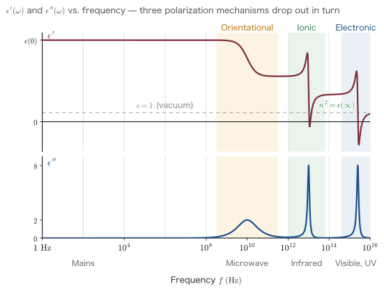
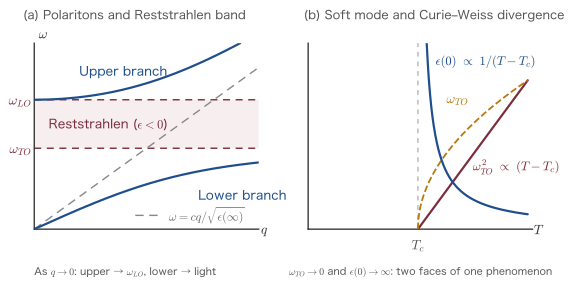
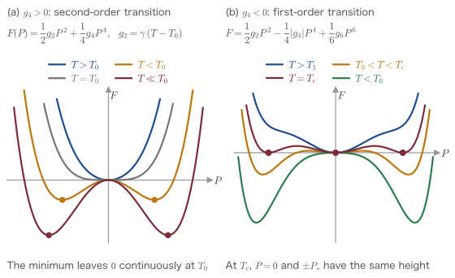
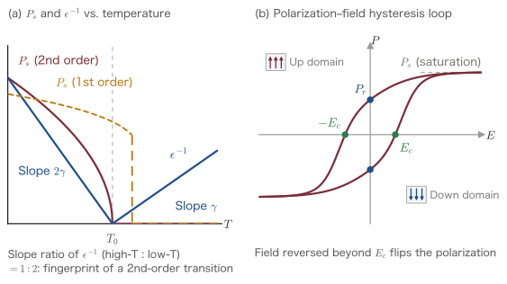

Chapter 19Dielectrics and Ferroelectrics
In Chapters 15 through 18 we dealt with materials in which electrons move—metals and semiconductors. In this chapter we turn to materials in which electrons do not move, that is, insulators. Since no current flows, one might think that nothing happens, but that is not the case at all. When an electric field is applied, the electron cloud is slightly displaced relative to the atomic nucleus, positive and negative ions are displaced in opposite directions, and molecules that already possess a dipole try to line up along the field. This response, in which charges move but do not flow, is dielectricity.
More surprisingly still, some dielectrics acquire a polarization by themselves, even without an externally applied electric field. Moreover, the direction of that polarization can be reversed by an external electric field. These are ferroelectrics. In $\mathrm{BaTiO_3}$, a shift of the $\mathrm{Ti}$ atom of only about $0.1\,\text{Å}$ from the center of the oxygen octahedron produces a huge spontaneous polarization of $26\ \mu\mathrm{C/cm^2}$. The shift of $0.1\,\text{Å}$ is only $2.5\%$ of the lattice constant. This picture, in which “a slight displacement produces an enormous effect,” is the theme that runs through this chapter.
The protagonists of this chapter are three relations. The Clausius–Mossotti relation connects a microscopic quantity, the polarizability $\alpha$ of a single atom, with a macroscopic quantity, the dielectric constant $\epsilon$. The Lyddane–Sachs–Teller relation ties the ratio of dielectric constants $\epsilon(0)/\epsilon(\infty)$ to the ratio of phonon frequencies $\omega_{LO}^2/\omega_{TO}^2$. And the Landau free-energy expansion almost completely determines the order of a phase transition and its critical exponents from symmetry alone. In every case, the starting point is a surprisingly simple assumption.
This chapter is also directly connected with Chapter 4. In Chapter 4 we stated that “of the 32 crystallographic point groups, only 10 are polar” and that “the search for new ferroelectrics is said to be harder than the search for new superconductors,” and we promised that “the details will be treated in Chapter 19.” Here we keep that promise. This is precisely the area that the Mochizuki Research Group actually studies.
- The distinction between the macroscopic field $\EE$ and the microscopic local electric field $\Eloc$, and the correspondence between Gaussian units and SI units
- Integrating the surface charge $-P\cos\theta$ of the Lorentz cavity to derive $\EE_2 = \frac{4\pi}{3}\PP$, and why $\EE_3=0$ for cubic symmetry
- The complete derivation of the Clausius–Mossotti relation $\dfrac{\epsilon-1}{\epsilon+2}=\dfrac{4\pi}{3}N\alpha$ and its numerical verification for $\mathrm{NaCl}$
- The three components of the polarizability—electronic, ionic, and orientational polarization—and the frequency range in which each contributes; the Langevin-type derivation of the orientational polarizability $\alpha_d = p^2/3k_BT$
- The displacive type ($\mathrm{BaTiO_3}$) and the order–disorder type ($\mathrm{KH_2PO_4}$), and the sequence of phase transitions of $\mathrm{BaTiO_3}$ with the point group and the direction of spontaneous polarization of each phase
- The polarization catastrophe: how the Curie–Weiss law $\epsilon = C/(T-T_c)$ follows from $\frac{4\pi}{3}N\alpha\to1$
- Deriving the Lyddane–Sachs–Teller relation $\dfrac{\omega_{LO}^2}{\omega_{TO}^2}=\dfrac{\epsilon(0)}{\epsilon(\infty)}$ from the equation of motion and the Maxwell equations, and the concept of the soft mode
- Solving the Landau expansion $F=F_0+\frac12g_2P^2+\frac14g_4P^4+\frac16g_6P^6-EP$ completely for both $g_4>0$ and $g_4<0$
- Domains and the hysteresis loop, the coercive field, piezoelectricity, and applications ($\mathrm{MLCC}$, $\mathrm{FeRAM}$, ultrasonic transducers, infrared sensors)
- Why the search for ferroelectrics is difficult—the restriction to the 10 polar point groups, the $d^0$ character, and first-principles calculations (the Berry-phase method and the search for soft modes)
19.1 Macroscopic and Microscopic Fields
19.1.1 Polarization and electric displacement
Definition: Polarization
The electric dipole moment per unit volume of a material is called the polarization. If the $j$th atom in the unit cell carries charge $q_j$ and is located at position $\rr_j$, then within a volume $V$ we have
$$ \PP = \frac{1}{V}\sum_j q_j \rr_j $$The quantity $\PP$ is a polar vector: under the inversion operation $\rr\to-\rr$ it changes sign, $\PP\to-\PP$. This transformation law was precisely the basis for the conclusion in Chapter 4 that “a centrosymmetric crystal cannot have a spontaneous polarization.”
However, this definition in the form of a sum can be used as it stands only for classical models in which the charges are spatially localized—neutral finite molecules, or ionic crystals in which the ions are replaced by point charges. In a periodic crystal, changing the choice of unit cell or origin changes the value of $\sum_j q_j\rr_j$ itself, so the absolute value of the polarization is not uniquely determined. Only the difference in polarization between two states has physical meaning. This situation, and its proper treatment (the modern theory of polarization based on the Berry phase), are discussed in Section 19.9.3.
In the Maxwell equations in matter, the bound charges are absorbed into the polarization, and the electric displacement $\DD$ is introduced. In Gaussian units,
Here $\chi$ is the electric susceptibility and $\epsilon$ is the dielectric constant. That $\DD = \epsilon\EE$ holds follows immediately from $\DD = \EE+4\pi\chi\EE = (1+4\pi\chi)\EE$.
Caution: The factor $4\pi$ appears in different places in Gaussian and SI units
Kittel’s chapter on dielectrics is written in Gaussian (CGS) units. On the other hand, undergraduate electromagnetism in Japan is taught in SI. If the two are mixed, a factor of $4\pi$ is invariably dropped, so we first make a correspondence table.
| Quantity or relation | Gaussian (CGS) | SI |
|---|---|---|
| Electric displacement | $\DD = \EE + 4\pi\PP$ | $\DD = \epsilon_0\EE + \PP$ |
| Definition of susceptibility | $\PP = \chi\EE$ | $\PP = \epsilon_0\chi\EE$ |
| Dielectric constant | $\epsilon = 1+4\pi\chi$ | $\epsilon_r = 1+\chi$ |
| Relation between the susceptibilities | $\chi_{\mathrm{SI}} = 4\pi\,\chi_{\mathrm{CGS}}$ | |
| Depolarizing field of a sphere | $\EE_1 = -\dfrac{4\pi}{3}\PP$ | $\EE_1 = -\dfrac{1}{3\epsilon_0}\PP$ |
| Lorentz field | $\EE_2 = +\dfrac{4\pi}{3}\PP$ | $\EE_2 = +\dfrac{1}{3\epsilon_0}\PP$ |
| Clausius–Mossotti | $\dfrac{\epsilon-1}{\epsilon+2}=\dfrac{4\pi}{3}N\alpha$ | $\dfrac{\epsilon_r-1}{\epsilon_r+2}=\dfrac{N\alpha}{3\epsilon_0}$ |
| Unit of polarizability | $\mathrm{cm^3}$ (dimension of volume) | $\mathrm{C\,m^2/V}$ |
| Relation between the polarizabilities | $\alpha_{\mathrm{SI}} = 4\pi\epsilon_0\,\alpha_{\mathrm{CGS}}$ (convert $\alpha_{\mathrm{CGS}}$ to $\mathrm{m^3}$ before substituting) | |
| Practical unit of polarization | $1\ \mu\mathrm{C/cm^2} = 10^{-2}\ \mathrm{C/m^2}$ | |
In this chapter, we use Gaussian units, following Kittel. However, when quoting numerical values, we also give the values converted to SI where necessary. Since $\epsilon$ is dimensionless, it has the same value in either system of units (that is the one place where you can relax).
Why does the polarizability $\alpha$ have the dimension of volume? (Gaussian units)
In Gaussian units, $\pp = \alpha\EE$, where the unit of $\pp$ is $\mathrm{esu\cdot cm}$ and the unit of $\EE$ is $\mathrm{esu/cm^2}$. Therefore the unit of $\alpha$ is $\mathrm{cm^3}$.
This is no accident. When a perfectly conducting sphere of radius $a$ is placed in an electric field $E$, its polarizability is exactly $\alpha = a^3$. In other words, the polarizability in Gaussian units directly tells us how large a conducting sphere the atom corresponds to. The value $\alpha_e = 1.62\times10^{-24}\ \mathrm{cm^3}$ of $\mathrm{Ar}$ corresponds to $a = 1.17\,\text{Å}$, which is of the same order of magnitude as the actual atomic radius of $\mathrm{Ar}$ ($\sim1.9\,\text{Å}$). It is a convenient system of units for developing a feeling for orders of magnitude.
19.1.2 Depolarizing field
Inside a uniformly polarized sample, an electric field is produced in the direction opposite to $\PP$. This is called the depolarizing field. Its cause is the bound charge that appears on the surface of the sample.
Derivation: The depolarizing field inside a uniformly polarized sphere
Suppose that a sphere of radius $R$ is uniformly polarized with $\PP = P\hat{z}$. A bound charge
$$ \sigma_b = \PP\cdot\hat{\nn} = P\cos\theta $$appears on the surface ($\hat{\nn}=\hat{\rr}$ is the outward normal and $\theta$ is the angle from the $z$ axis). It is $+P$ at the north pole ($\theta=0$) and $-P$ at the south pole ($\theta=\pi$).
Let us directly calculate the electric field at the center of the sphere. The area of the band (ring) between the angles $\theta$ and $\theta+\dd\theta$ is
$$ \dd A = (R\sin\theta)(R\,\dd\theta)\,\dd\phi = R^2\sin\theta\,\dd\theta\,\dd\phi $$and the charge on it is $\dd q = \sigma_b\,\dd A = P\cos\theta\,R^2\sin\theta\,\dd\theta\,\dd\phi$. By Coulomb’s law, the electric field produced at the origin by a point charge $\dd q$ located at position $\rr = R\hat{\rr}$ is
$$ \dd\EE = \dd q\,\frac{\bm{0}-\rr}{\abs{\bm{0}-\rr}^3} = -\frac{\dd q}{R^2}\,\hat{\rr} $$Its $z$ component is $\dd E_z = -\dfrac{\dd q}{R^2}\cos\theta$. The $x,y$ components vanish upon integration over $\phi$, since $\int_0^{2\pi}\cos\phi\,\dd\phi = \int_0^{2\pi}\sin\phi\,\dd\phi = 0$. What remains is
$$ E_{1z} = -\frac{1}{R^2}\int_0^{2\pi}\!\!\dd\phi\int_0^{\pi} \cos\theta\;\left(P\cos\theta\,R^2\sin\theta\right)\dd\theta = -2\pi P\int_0^{\pi}\cos^2\theta\,\sin\theta\,\dd\theta $$Here we substitute $u=\cos\theta$. Since $\dd u = -\sin\theta\,\dd\theta$ and $\theta:0\to\pi$ corresponds to $u:1\to-1$,
$$ \int_0^{\pi}\cos^2\theta\sin\theta\,\dd\theta = -\int_{1}^{-1}u^2\,\dd u = \int_{-1}^{1}u^2\,\dd u = \left[\frac{u^3}{3}\right]_{-1}^{1} = \frac{2}{3} $$Therefore
∎ The minus sign, that is, the fact that the field points in the direction opposite to $\PP$, is the origin of the name “depolarization.” This integral value $2/3$ will appear again, exactly the same, in the Lorentz field in the next section. Please remember it well.
Note that for a sphere, it is known that the electric field is uniformly $-\frac{4\pi}{3}\PP$ not only at the center but everywhere inside (a special circumstance due to spherical symmetry). It is thanks to this uniformity that the calculation at the center alone gave the answer.
Supplement: Depolarization factors and the shape of the sample
In general, inside a uniformly polarized ellipsoid we can write $E_{1i} = -N_{d,i} P_i$ ($i=x,y,z$). The $N_{d,i}$ are called the depolarization factors. Since we write $N$ for the number density per unit volume from Section 19.3 onward, we attach the subscript $d$ to the depolarization factor to distinguish the two. In Gaussian units,
$$ N_{d,x} + N_{d,y} + N_{d,z} = 4\pi $$(in SI the sum is $1$). Values for representative shapes are listed below.
| Sample shape | Direction of $\PP$ | $N_d$ |
|---|---|---|
| Sphere | Arbitrary | $4\pi/3 \simeq 4.19$ |
| Thin plate | Perpendicular to the plane | $4\pi$ |
| Thin plate | In the plane | $0$ |
| Long thin cylinder | Parallel to the axis | $0$ |
| Long thin cylinder | Perpendicular to the axis | $2\pi$ |
This table is of decisive importance in designing experiments. If the polarization of a ferroelectric thin film is set perpendicular to the film plane, the largest depolarizing field, $N_d=4\pi$, acts, and the polarization becomes unstable. This is why, in actual devices, electrodes are attached above and below to screen the surface charge (the electrodes cancel the bound charge, so that effectively $N_d\to0$). Conversely, in a free-standing film without electrodes, the polarization splits into domains in an attempt to cancel the depolarizing field. The discussion of domains in Section 19.8 starts from this table.
19.2 The Local Electric Field and the Lorentz Field
19.2.1 Why we must distinguish two kinds of electric field
This is the first—and probably the greatest—conceptual hurdle of this chapter.
The $\EE$ that appears in Maxwell's equations is a field that has been smoothed over the violent atomic-scale irregularities. Inside a real crystal, the electric field right next to an atomic nucleus reaches as much as $10^{9}\ \mathrm{V/cm}$, and it is much smaller between atoms. Such a field is unmanageable if put into the equations as it stands, so we use a smooth field averaged over a volume of about one unit cell. This is the macroscopic field $\EE$.
When we ask “how strongly a given atom is polarized,” however, the situation is different. What that atom actually feels is the electric field produced by all the charges other than itself. This is called the local electric field $\Eloc$. In general, $\Eloc$ and $\EE$ do not coincide.
Why $\Eloc \neq \EE$? — In a nutshell
The macroscopic field $\EE$ is “the field averaged with the contribution of the atom under consideration included.” The polarization of an atom, on the other hand, is determined by “the field produced by the other atoms.” The field an atom produces itself does not polarize that atom. This difference is $\Eloc - \EE$.
In a dilute gas the atoms are far apart, so this difference can be neglected ($\epsilon\simeq1$). In a solid, however, the interatomic distance is only $\sim3\,\text{Å}$, and the field produced by the neighboring atoms cannot be neglected. The further the dielectric constant departs from $1$, the more essential this correction becomes. And in a ferroelectric, this correction is what causes the transition itself.
19.2.2 Lorentz's fourfold decomposition
Definition: The four contributions to the local electric field
Choose one atom in a crystal and consider a virtual sphere of radius $a$ centered on it (the Lorentz cavity). We take $a$ to be sufficiently small macroscopically but sufficiently large compared with the interatomic distance (for example, $a\sim 20\,\text{Å}$). The local electric field can then be divided into the following four parts.
- $\EE_0$: the externally applied electric field (the field produced by electrodes and the like outside the sample)
- $\EE_1$: the field produced by the polarization charges that appear on the outer surface of the sample = the depolarizing field
- $\EE_2$: the field produced by the polarization charges that appear on the inner wall of the Lorentz cavity = the Lorentz field
- $\EE_3$: the field produced by the dipoles inside the cavity (excluding the atom under consideration itself)
The macroscopic field is then
$$ \EE = \EE_0 + \EE_1 $$The contributions $\EE_2$ and $\EE_3$ have to be counted separately only because we introduced the artificial boundary of the cavity, and the sum $\EE_2+\EE_3$ corresponds to the difference between the local field and the macroscopic field. To say that the boundary is artificial means that “the sum does not change wherever the cavity is cut”; it does not mean that the sum itself vanishes. Indeed, as we shall see in the next section, at an equivalent site of cubic symmetry $\EE_3=0$ but $\EE_2=\frac{4\pi}{3}\PP$ remains, and this makes the local field stronger than the macroscopic field. Therefore
Caution: The cavity is not a “real hole”
The Lorentz cavity is nothing more than a mathematical boundary line drawn in order to split the calculation into a “distant contribution” and a “nearby contribution.” We are not hollowing out the material.
What we are doing is the following rearrangement of a sum.
- The material outside the sphere is treated as a continuously polarized medium, ignoring the graininess of the atoms (it is far away, so a coarse treatment suffices). The contribution of the bound charges that this medium produces on the cavity wall is $\EE_2$.
- The material inside the sphere is conscientiously summed up dipole by dipole (it is close, so a fine treatment is needed). That sum is $\EE_3$.
The fact that the answer does not depend on the choice of $a$ is what justifies this split (if $a$ is made larger, the region included in the calculation of $\EE_2$ grows, but by the same amount it drops out of the sum for $\EE_3$—the net change is zero).
19.2.3 Derivation of the Lorentz field $\EE_2$
Derivation: The field produced by the Lorentz cavity, $\EE_2 = \frac{4\pi}{3}\PP$
Suppose that the medium outside the cavity is uniformly polarized as $\PP = P\hat{z}$. Let us find the bound charge that appears on the wall of the cavity (that is, on the inner boundary surface of the medium).
Step 1: Find the surface charge density. The bound surface charge is given by $\sigma_b = \PP\cdot\hat{\nn}$, where $\hat{\nn}$ is the normal pointing out of the dielectric. Here the dielectric lies outside the sphere, so “out” as seen from the dielectric means the direction toward the center of the cavity, that is, $\hat{\nn} = -\hat{\rr}$. Therefore
Note the sign. It is exactly opposite to the surface charge $+P\cos\theta$ of the “uniformly polarized sphere itself” calculated in Section 19.1.2. Negative charge lies on the upper half of the cavity ($\theta<\pi/2$) and positive charge on the lower half.
Step 2: Divide the surface into bands (rings). The area of the band between the angles $\theta$ and $\theta+\dd\theta$ is
$$ \dd A = (a\sin\theta)\,(a\,\dd\theta)\,\dd\phi = a^2\sin\theta\,\dd\theta\,\dd\phi $$(we have written the fact that the circumference of the band is $2\pi a\sin\theta$ and its width is $a\,\dd\theta$ in the form of a $\phi$ integral). The charge on this band is
$$ \dd q = \sigma_b\,\dd A = -P\cos\theta\;a^2\sin\theta\,\dd\theta\,\dd\phi $$Step 3: Find the electric field at the center. The electric field that the charge $\dd q$ at position $\rr = a\hat{\rr}$ produces at the origin is
$$ \dd\EE = \dd q\,\frac{\bm{0}-\rr}{\abs{\bm{0}-\rr}^3} = -\frac{\dd q}{a^2}\hat{\rr} $$Its $z$ component, using $\hat{\rr}\cdot\hat{z}=\cos\theta$, is
$$ \dd E_{2z} = -\frac{\dd q}{a^2}\cos\theta $$Step 4: Integrate. Substituting $\dd q$ and noting that $a^2$ cancels, we obtain
$$ E_{2z} = -\frac{1}{a^2}\int_0^{2\pi}\!\!\dd\phi\int_0^\pi \cos\theta\left(-P\cos\theta\;a^2\sin\theta\right)\dd\theta = +P\int_0^{2\pi}\!\!\dd\phi\int_0^\pi\cos^2\theta\,\sin\theta\,\dd\theta $$The $\phi$ integral gives $2\pi$. The $\theta$ integral is exactly the same as in Section 19.1.2; with the substitution $u=\cos\theta$,
$$ \int_0^\pi \cos^2\theta\,\sin\theta\,\dd\theta = \int_{-1}^{1}u^2\,\dd u = \left[\frac{u^3}{3}\right]_{-1}^{1} = \frac{1}{3}-\left(-\frac{1}{3}\right) = \frac{2}{3} $$Hence
$$ E_{2z} = P\cdot 2\pi\cdot\frac{2}{3} = \frac{4\pi}{3}P $$The $x,y$ components vanish because $\int_0^{2\pi}\cos\phi\,\dd\phi = \int_0^{2\pi}\sin\phi\,\dd\phi=0$. Therefore
∎ This is the Lorentz field. It is of decisive importance that it points in the same direction as $\PP$. The local electric field is stronger than the macroscopic field. Polarization further promotes polarization—this positive feedback gives rise to the polarization catastrophe of Section 19.5.
Physical Meaning: Why do $\EE_1$ and $\EE_2$ have opposite signs?
If we consider the spherical sample as a whole, $\EE_1 = -\frac{4\pi}{3}\PP$ and the contribution of the Lorentz cavity is $\EE_2 = +\frac{4\pi}{3}\PP$, so the two cancel each other completely. In fact, this is not a coincidence.
In the case of a spherical sample, the “charge on the outer surface of the sample” and the “charge on the wall of the cavity” have exactly the same geometry (a $\cos\theta$ distribution on a spherical surface), and only the direction of the normal is reversed. Hence the contributions also differ only in sign.
As a result, for a spherical sample, $\Eloc = \EE_0 + \EE_3$. The part that depends on the shape of the sample ($\EE_1$) has been canceled by the contribution of the cavity ($\EE_2$). This confirms by calculation the obvious but important fact that “$\Eloc$ is a local quantity that does not depend on the shape of the sample.”
19.2.4 Contribution of the dipoles inside the cavity, $\EE_3$
Derivation: $\EE_3 = 0$ for cubic symmetry
Suppose that all the dipoles inside the cavity have the same $\pp = p\hat{z}$ (the assumption of uniform polarization). The electric field that a point dipole at position $\rr_i = (x_i,y_i,z_i)$ produces at the origin is
$$ \EE^{(i)} = \frac{3(\pp\cdot\hat{\rr}_i)\hat{\rr}_i - \pp}{r_i^3} $$Writing out the $z$ component, using $\pp\cdot\hat{\rr}_i = p z_i/r_i$ and $\hat{\rr}_i\cdot\hat{z} = z_i/r_i$, we have
$$ E^{(i)}_z = \frac{1}{r_i^3}\left(3\,\frac{p z_i}{r_i}\cdot\frac{z_i}{r_i} - p\right) = p\,\frac{3z_i^2 - r_i^2}{r_i^5} $$Sum over all the dipoles in the cavity (excluding the atom of interest itself, $i=0$):
$$ E_{3z} = p\sum_{i\neq0}\frac{3z_i^2-r_i^2}{r_i^5} = p\left(3\sum_{i\neq0}\frac{z_i^2}{r_i^5} - \sum_{i\neq0}\frac{1}{r_i^3}\right) $$Now suppose that the surroundings of the atom of interest have cubic symmetry (the three directions $x,y,z$ are carried into one another by symmetry operations). Then for the lattice sums
$$ \sum_{i\neq0}\frac{x_i^2}{r_i^5} = \sum_{i\neq0}\frac{y_i^2}{r_i^5} = \sum_{i\neq0}\frac{z_i^2}{r_i^5} $$holds. Adding the three, and using $x_i^2+y_i^2+z_i^2 = r_i^2$, we get
$$ 3\sum_{i\neq0}\frac{z_i^2}{r_i^5} = \sum_{i\neq0}\frac{x_i^2+y_i^2+z_i^2}{r_i^5} = \sum_{i\neq0}\frac{r_i^2}{r_i^5} = \sum_{i\neq0}\frac{1}{r_i^3} $$Substituting this into the expression above, the entire contents of the parentheses vanish:
∎ The $x,y$ components vanish in the same way ($\sum x_iz_i/r_i^5 = 0$ follows from cubic symmetry). Therefore
$$ \boxed{\;\Eloc = \EE + \frac{4\pi}{3}\PP\;} $$holds for atoms at sites of cubic symmetry. This equation is the starting point of the next section.
Example 19.1: Checking that $\EE_3=0$ for the six nearest neighbors in a simple cubic lattice
A dipole $\pp = p\hat{z}$ is placed at each lattice point of a simple cubic lattice with lattice constant $a$. Calculate the electric field that the dipole at the origin feels from its six nearest neighbors.
Solution. The nearest neighbors are the six points $(\pm a,0,0),(0,\pm a,0),(0,0,\pm a)$. We use the formula $E_z^{(i)} = p(3z_i^2-r_i^2)/r_i^5$.
| Position | $z_i$ | $r_i$ | $3z_i^2-r_i^2$ | $E^{(i)}_z$ | Number |
|---|---|---|---|---|---|
| $(0,0,\pm a)$ | $\pm a$ | $a$ | $3a^2-a^2=2a^2$ | $+2p/a^3$ | 2 |
| $(\pm a,0,0)$ | $0$ | $a$ | $0-a^2=-a^2$ | $-p/a^3$ | 2 |
| $(0,\pm a,0)$ | $0$ | $a$ | $0-a^2=-a^2$ | $-p/a^3$ | 2 |
Summing, we obtain
$$ E_{3z}^{(\text{nearest neighbor})} = 2\cdot\frac{2p}{a^3} + 2\cdot\left(-\frac{p}{a^3}\right) + 2\cdot\left(-\frac{p}{a^3}\right) = \frac{4p-2p-2p}{a^3} = 0 $$∎ It cancels perfectly. The two on the $z$ axis are “close to the head and tail of the dipole,” so they act in the direction that aids the polarization ($+$); the four on the equator are “at the side of the dipole,” so they act in the direction that opposes it ($-$). Their strengths are in the ratio $2:1$, and there are $2$ of them against $4$, so they balance exactly.
The same holds from the second neighbors (12 points of the type $(\pm a,\pm a,0)$) onward: as long as the symmetry is cubic, the contribution vanishes shell by shell, independently for each shell. The symmetry argument given in the derivation states this “vanishing in every shell” all at once.
Caution: When $\Eloc = \EE + \frac{4\pi}{3}\PP$ cannot be used
This beautiful equation has clear limits of applicability.
- When the atomic site does not have cubic symmetry. For example, at the oxygen site ($4/mmm$) of wurtzite-type $\mathrm{ZnO}$ or of a perovskite, $\EE_3\neq0$, and the Lorentz factor is not $\frac{4\pi}{3}$ but a tensor $L_{ij}$. In first-principles calculations for real ferroelectrics, this lattice sum (Ewald sum) is evaluated numerically.
- When the dipoles are not spatially uniform. In the derivation we assumed that all the dipoles in the cavity are equal. In a system in which the polarization fluctuates strongly (near a phase transition point), this assumption becomes doubtful.
- Liquids in which permanent dipoles interact strongly with one another. Water is the representative example. As we will see in Section 19.3, a naive application of Clausius–Mossotti to water leads to the impossible conclusion that “water is a ferroelectric.” Onsager (1936) and Kirkwood (1939) resolved this by constructing a theory that uses the reaction field in place of the Lorentz field.
Even so, for cubic ionic crystals and rare-gas solids, $\Eloc = \EE+\frac{4\pi}{3}\PP$ works surprisingly well. We will check this numerically in the next section.
19.3 The Clausius–Mossotti Relation and the Three Components of the Polarizability
19.3.1 Derivation of the Clausius–Mossotti relation
In the previous section we obtained the expression for the local electric field. All that remains is to write down the “response of a single atom,” and we can reach the macroscopic dielectric constant.
Definition: Polarizability
When a local electric field $\Eloc$ is applied to an atom (or ion, or molecule) and the induced dipole moment can be written as
$$ \pp = \alpha\,\Eloc $$we call $\alpha$ the polarizability of that atom. If $N$ is the number of atoms per unit volume, the polarization is
When there are several kinds of atoms, we write $\PP = \sum_j N_j\alpha_j\Eloc^{(j)}$.
Derivation: The Clausius–Mossotti relation (without skipping a single line of algebra)
The starting point is just two equations.
$$ \text{(i)}\quad P = N\alpha\,E_{\mathrm{loc}}, \qquad\qquad \text{(ii)}\quad E_{\mathrm{loc}} = E + \frac{4\pi}{3}P $$(Below, all vectors point in the same direction, so we write only their magnitudes.)
Step 1: Eliminate $E_{\mathrm{loc}}$. Substituting (ii) into (i) gives
$$ P = N\alpha\left(E + \frac{4\pi}{3}P\right) = N\alpha E + \frac{4\pi}{3}N\alpha P $$Step 2: Solve for $P$. Move the term containing $P$ on the right-hand side to the left-hand side.
$$ P - \frac{4\pi}{3}N\alpha P = N\alpha E \qquad\Longrightarrow\qquad P\left(1 - \frac{4\pi}{3}N\alpha\right) = N\alpha E $$Dividing both sides by $\left(1-\frac{4\pi}{3}N\alpha\right)$, we obtain
$$ P = \frac{N\alpha}{1-\dfrac{4\pi}{3}N\alpha}\;E $$Therefore the susceptibility is
Step 3: Shorten the notation. Let
$$ u \equiv \frac{4\pi}{3}N\alpha $$Then $N\alpha = \dfrac{3u}{4\pi}$ and $\chi = \dfrac{3u}{4\pi(1-u)}$.
Step 4: Convert to the dielectric constant. Substituting into $\epsilon = 1+4\pi\chi$, the $4\pi$ cancels and we get
$$ \epsilon = 1 + 4\pi\cdot\frac{3u}{4\pi(1-u)} = 1 + \frac{3u}{1-u} $$Putting everything over a common denominator gives
Step 5: Solve in reverse. Compute $\epsilon-1$ and $\epsilon+2$ separately.
$$ \epsilon - 1 = \frac{1+2u}{1-u} - 1 = \frac{(1+2u)-(1-u)}{1-u} = \frac{3u}{1-u} $$ $$ \epsilon + 2 = \frac{1+2u}{1-u} + 2 = \frac{(1+2u)+2(1-u)}{1-u} = \frac{1+2u+2-2u}{1-u} = \frac{3}{1-u} $$Taking the ratio of these two, both the denominator $(1-u)$ and the factor $3$ cancel cleanly, and we have
$$ \frac{\epsilon-1}{\epsilon+2} = \frac{3u/(1-u)}{3/(1-u)} = u $$Restoring $u$, we obtain the desired equation.
∎ This is the Clausius–Mossotti relation. The heart of it is that it is not $\epsilon-1$ but the combination $\dfrac{\epsilon-1}{\epsilon+2}$ that is proportional to $N\alpha$.
What does this equation say?
It says three things.
- It connects the microscopic and the macroscopic. The left-hand side consists only of the measurable macroscopic quantity $\epsilon$. The right-hand side consists only of the property $\alpha$ of a single atom and the density $N$. That is, if we measure the dielectric constant we learn the polarizability of the atoms, and conversely, if we know the polarizability we can predict the dielectric constant.
- The additivity rule holds. The right-hand side is a sum of $N\alpha$ terms. If there are several kinds of ions, we simply add them up as $\sum_j N_j\alpha_j$. This is why the dielectric constant of an ionic crystal can be explained reasonably well as a sum of the polarizabilities of its constituent ions.
- There is a danger that the denominator becomes zero. As $u=\frac{4\pi}{3}N\alpha \to 1$, $\epsilon\to\infty$. This is the polarization catastrophe of Section 19.5. The origin of ferroelectricity is, in fact, hidden in this single line.
In the dilute limit ($u\ll1$), $\epsilon\simeq1+3u = 1+4\pi N\alpha$, that is, $\chi\simeq N\alpha$, and we return to the naive expression without the local-field correction. This is the dielectric constant of a gas.
Supplement: The form in the optical region — the Lorentz–Lorenz equation
At visible-light frequencies ($\sim10^{15}\ \mathrm{Hz}$), the heavy ions cannot follow the electric field, and only the electrons respond. Using Maxwell's relation $n^2 = \epsilon$ ($n$ is the refractive index, and $\mu=1$ for a nonmagnetic material), Eq. \eqref{eq:19-clausius-mossotti} becomes
This is called the Lorentz–Lorenz equation. Its physical content is exactly the same as that of the Clausius–Mossotti relation; we have merely restricted the object to the electronic polarization.
In chemistry, multiplying this by the molar volume $M/\rho$ ($M$: molar mass, $\rho$: density) gives
$$ R_M \equiv \frac{n^2-1}{n^2+2}\cdot\frac{M}{\rho} = \frac{4\pi}{3}N_A\alpha_e $$which is called the molar refraction. The right-hand side is a constant that depends on neither the amount of substance nor the density, so $R_M$ stays constant even when the temperature, pressure, or phase (gas or liquid) is changed. This is why it is used in organic chemistry to infer molecular structure. This is the kind of benefit that the “curious combination $\dfrac{\epsilon-1}{\epsilon+2}$” brings.
Example 19.2: Calculating the refractive index of $\mathrm{NaCl}$ from the polarizabilities
$\mathrm{NaCl}$ has the rock-salt-type structure ($Fm\bar{3}m$, $a=5.64\,\text{Å}$), and the cubic unit cell contains four $\mathrm{NaCl}$ pairs. Using the electronic polarizabilities of the ions, estimate $\epsilon(\infty)$ and the refractive index $n$, and compare them with the measured values $\epsilon(\infty)=2.25$ ($n=1.50$).
Solution. Step 1: Find the number density $N$ of ion pairs.
$$ a^3 = (5.64\times10^{-8}\ \mathrm{cm})^3 = 1.794\times10^{-22}\ \mathrm{cm^3} $$ $$ N = \frac{4\ \text{pairs}}{1.794\times10^{-22}\ \mathrm{cm^3}} = 2.23\times10^{22}\ \mathrm{cm^{-3}} $$Step 2: Add the polarizabilities. Since there is one $\mathrm{Na^+}$ and one $\mathrm{Cl^-}$ per pair, $\alpha = \alpha(\mathrm{Na^+})+\alpha(\mathrm{Cl^-})$. There are two possible values, depending on the source (see Table 19.3).
- Pauling's free-ion values: $0.179 + 3.66 = 3.84$ (in units of $10^{-24}\ \mathrm{cm^3}$)
- Values in the crystal (Tessman–Kahn–Shockley): $0.179 + 2.96 = 3.14$
Step 3: Calculate $u$. With the Pauling values,
$$ u = \frac{4\pi}{3}N\alpha = 4.189 \times (2.23\times10^{22})\times(3.84\times10^{-24}) = 4.189\times 0.0856 = 0.359 $$With the TKS values,
$$ u = 4.189\times(2.23\times10^{22})\times(3.14\times10^{-24}) = 4.189\times 0.0700 = 0.293 $$Step 4: Find $\epsilon$. From Eq. \eqref{eq:19-eps-u}, $\epsilon = \dfrac{1+2u}{1-u}$,
$$ \text{Pauling}:\quad \epsilon = \frac{1+0.718}{1-0.359} = \frac{1.718}{0.641} = 2.68 \qquad(n = 1.64) $$ $$ \text{TKS}:\quad \epsilon = \frac{1+0.586}{1-0.293} = \frac{1.586}{0.707} = 2.24 \qquad(n = 1.50) $$∎ With the TKS values, the result agrees almost perfectly with the measured value $2.25$. With Pauling's free-ion values, it is a $19\%$ overestimate.
What is the origin of this difference? A large anion such as $\mathrm{Cl^-}$ has a swollen electron cloud in vacuum and is easily polarized, but in a crystal it is squeezed by the surrounding cations and becomes stiffer. Hence the effective polarizability in the crystal is smaller than the free-ion value. Conversely, this also means that the Clausius–Mossotti relation is accurate enough to detect this difference of about $20\%$.
| Noble gas | $\alpha_e$ | Cation | $\alpha_e$ | Anion | $\alpha_e$ |
|---|---|---|---|---|---|
| $\mathrm{He}$ | 0.20 | $\mathrm{Li^+}$ | 0.03 | $\mathrm{F^-}$ | 1.04 |
| $\mathrm{Ne}$ | 0.39 | $\mathrm{Na^+}$ | 0.18 | $\mathrm{Cl^-}$ | 3.66 (2.96) |
| $\mathrm{Ar}$ | 1.62 | $\mathrm{K^+}$ | 0.83 | $\mathrm{Br^-}$ | 4.77 |
| $\mathrm{Kr}$ | 2.46 | $\mathrm{Rb^+}$ | 1.40 | $\mathrm{I^-}$ | 7.10 |
| $\mathrm{Xe}$ | 3.99 | $\mathrm{Cs^+}$ | 2.42 | $\mathrm{O^{2-}}$ | 3.88 (2.4) |
| $\mathrm{Mg^{2+}}$ | 0.09 | $\mathrm{S^{2-}}$ | 10.2 | ||
| $\mathrm{Ca^{2+}}$ | 0.47 | ||||
| $\mathrm{Ba^{2+}}$ | 1.55 | ||||
| $\mathrm{Ti^{4+}}$ | 0.19 |
There are three things we want you to take away from this table. First, the polarizability is roughly proportional to the cube of the ionic radius (from $\mathrm{Li^+}\to\mathrm{Cs^+}$ it increases 80-fold, while the cube of the radius ratio $0.76:1.67\,\text{Å}$ is a factor of $10.6$ … the effect of charge is added to this and widens the gap further). Second, anions are far more polarizable than cations (they have extra electrons, and the binding by the nucleus is looser). Third, small, highly charged cations are hardly polarized at all—the $0.19$ of $\mathrm{Ti^{4+}}$ is comparable to that of $\mathrm{Na^+}$. It is from this last fact that we know that the enormous dielectric constant of $\mathrm{BaTiO_3}$ cannot be explained by the “electronic polarization of $\mathrm{Ti}$” and is due instead to the displacement of ions.
19.3.2 The three components of the polarizability
Definition: The three contributions to the polarizability
The total polarizability is divided into three parts, in order of how fast they respond.
$$ \alpha = \alpha_e + \alpha_i + \alpha_d $$- $\alpha_e$: the electronic polarizability. The electron cloud is displaced relative to the atomic nucleus. This is the fastest response and follows the field up to the ultraviolet.
- $\alpha_i$: the ionic polarizability. Positive and negative ions are displaced in opposite directions. It follows the field up to the infrared. It exists only in crystals with ionic bonding.
- $\alpha_d$: the orientational (dipolar) polarizability. Molecules that originally possess permanent dipoles align themselves along the direction of the electric field. This is the slowest, and it drops out in the microwave region. It is zero if there are no permanent dipoles.
Derivation 1: Electronic polarizability — treating a bound electron as a harmonic oscillator
Suppose an electron of mass $m$ and charge $-e$ is bound to the atomic nucleus by a restoring force $-m\omega_0^2 x$. When an external electric field $E$ is applied, the equation of motion is
$$ m\ddot{x} = -m\omega_0^2 x - eE $$For a static field ($\ddot{x}=0$),
$$ 0 = -m\omega_0^2 x - eE \quad\Longrightarrow\quad x = -\frac{eE}{m\omega_0^2} $$The induced dipole moment is $p = (-e)\cdot x = \dfrac{e^2E}{m\omega_0^2}$, and therefore
Let us insert numbers. As a rough estimate of the binding energy, take $\hbar\omega_0 = 10\ \mathrm{eV}$ (a typical atomic excitation energy). Then
$$ \omega_0 = \frac{10\times1.602\times10^{-12}\ \mathrm{erg}}{1.055\times10^{-27}\ \mathrm{erg\,s}} = 1.52\times10^{16}\ \mathrm{s^{-1}} $$ $$ \alpha_e = \frac{(4.803\times10^{-10})^2}{(9.11\times10^{-28})\times(1.52\times10^{16})^2} = \frac{2.31\times10^{-19}}{2.10\times10^{5}} = 1.1\times10^{-24}\ \mathrm{cm^3} $$∎ This agrees remarkably well in order of magnitude with the values in Table 19.3 ($0.2\sim7\times10^{-24}\ \mathrm{cm^3}$). It is worth remembering that “$10^{-24}\ \mathrm{cm^3}$ per atom” is the typical scale of the electronic polarizability.
For an oscillating field, solving $m\ddot{x} = -m\omega_0^2x - eEe^{-i\omega t}$ gives
$$ \alpha_e(\omega) = \frac{e^2/m}{\omega_0^2-\omega^2} $$For $\omega\ll\omega_0$ this equals the static value, it resonates as $\omega\to\omega_0$, and for $\omega\gg\omega_0$ it becomes negative and approaches $0$.
Derivation 2: Ionic polarizability — a spring joining two atoms
Suppose that two ions of masses $M_+$ and $M_-$ carry effective charges $\pm e^*$ and are joined by a spring of spring constant $C$. Let the relative displacement be $u = u_+-u_-$ (this is not the dimensionless parameter $u=\frac{4\pi}{3}N\alpha$ introduced in Section 19.3.1; this one has the dimension of length). Using the reduced mass $\mu = \dfrac{M_+M_-}{M_++M_-}$ (as in the discussion of the diatomic chain in Chapter 13), we have
$$ \mu\ddot{u} = -Cu + e^*E = -\mu\omega_0^2 u + e^*E, \qquad \omega_0^2 \equiv C/\mu $$In the static case $u = \dfrac{e^*E}{\mu\omega_0^2}$, and the dipole moment is $p = e^*u$, so
Estimate for $\mathrm{NaCl}$. $\mu = \dfrac{23.0\times35.5}{58.5}\,\mathrm{amu} = 13.95\ \mathrm{amu} = 2.32\times10^{-23}\ \mathrm{g}$. From infrared absorption, $\omega_{TO} = 2\pi\times4.92\ \mathrm{THz} = 3.09\times10^{13}\ \mathrm{s^{-1}}$. Taking $e^*\simeq e$,
$$ \alpha_i \sim \frac{2.31\times10^{-19}}{(2.32\times10^{-23})(3.09\times10^{13})^2} = \frac{2.31\times10^{-19}}{2.21\times10^{4}} = 1.0\times10^{-23}\ \mathrm{cm^3} $$∎ This is about three times the electronic polarizability ($3.1\times10^{-24}$). We have obtained the qualitative conclusion that in ionic crystals, ionic polarization plays the leading role in the static dielectric constant.
Quantitatively, however, the estimate is not correct. Working backward from the measured $\epsilon(0)=5.90$ with the Clausius–Mossotti relation gives $\alpha_{\text{total}} = 6.6\times10^{-24}$; hence $\alpha_i = 6.6-3.1 = 3.5\times10^{-24}\ \mathrm{cm^3}$, which is $1/3$ of the estimate above. There are two reasons. (a) $\omega_0$ is the frequency of the spring without the local field, whereas the measured $\omega_{TO}$ is a value already softened by the local field, so that $\omega_0 > \omega_{TO}$ (we derive this relation rigorously in Section 19.6). (b) In the estimate we set $e^*\simeq e$, but the bare effective charge, before the local-field enhancement factor is renormalized, is $e^*\simeq0.79\,e$ for $\mathrm{NaCl}$, smaller than $e$ (we derive this in Section 19.6.3). Since $\alpha_i\propto e^{*2}$, this alone gives a factor of about $0.6$. Note that this is a different quantity from the frequently quoted Born effective charge $Z^* = \dfrac{e^*(\epsilon(\infty)+2)}{3e} \simeq 1.1$. Understanding “why the estimate is off” serves as a bridge to Section 19.6.
Derivation 3: Orientational polarizability — Langevin's statistical mechanics (the calculation Kittel skips)
Consider an assembly of molecules with permanent dipoles $\pp$ (of magnitude $p$). In an electric field $E$ (in the $z$ direction), the energy of a dipole pointing at an angle $\theta$ from the $z$ axis is
$$ U = -\pp\cdot\EE = -pE\cos\theta $$(the energy is lowest when the dipole is aligned with the field). We compute $\langle\cos\theta\rangle$ at thermal equilibrium with the Boltzmann distribution. The solid-angle element is $\dd\Omega = \sin\theta\,\dd\theta\,\dd\phi$, and the $\phi$ integral gives a factor $2\pi$ in each of the numerator and the denominator, which cancel, so
$$ \langle\cos\theta\rangle = \frac{\displaystyle\int_0^\pi \cos\theta\;e^{\,pE\cos\theta/k_BT}\sin\theta\,\dd\theta}{\displaystyle\int_0^\pi e^{\,pE\cos\theta/k_BT}\sin\theta\,\dd\theta} $$Here we replace two variables. Let $u = \cos\theta$ ($\dd u = -\sin\theta\,\dd\theta$) and $y \equiv \dfrac{pE}{k_BT}$. The range of integration becomes $u:-1\to1$, and
$$ \langle\cos\theta\rangle = \frac{\displaystyle\int_{-1}^{1} u\,e^{yu}\,\dd u}{\displaystyle\int_{-1}^{1} e^{yu}\,\dd u} $$Compute the denominator.
$$ \int_{-1}^1 e^{yu}\dd u = \left[\frac{e^{yu}}{y}\right]_{-1}^{1} = \frac{e^{y}-e^{-y}}{y} = \frac{2\sinh y}{y} $$The numerator follows by differentiating the denominator with respect to $y$ (because $\dfrac{\partial}{\partial y}e^{yu} = u\,e^{yu}$).
$$ \int_{-1}^1 u\,e^{yu}\dd u = \frac{\dd}{\dd y}\left(\frac{2\sinh y}{y}\right) = \frac{2y\cosh y - 2\sinh y}{y^2} $$Take the ratio.
$$ \langle\cos\theta\rangle = \frac{2y\cosh y-2\sinh y}{y^2}\cdot\frac{y}{2\sinh y} = \frac{y\cosh y - \sinh y}{y\sinh y} = \coth y - \frac{1}{y} \equiv L(y) $$$L(y)$ is called the Langevin function.
Expansion in a weak electric field. The Laurent expansion of $\coth y$ is
$$ \coth y = \frac{1}{y} + \frac{y}{3} - \frac{y^3}{45} + \cdots $$so that
$$ L(y) = \frac{y}{3} - \frac{y^3}{45}+\cdots \simeq \frac{y}{3} \qquad (y\ll1) $$Therefore the average of the $z$ component of the dipole is
$$ \langle p_z\rangle = p\,\langle\cos\theta\rangle \simeq \frac{p\,y}{3} = \frac{p}{3}\cdot\frac{pE}{k_BT} = \frac{p^2}{3k_BT}E $$that is,
∎ Of the three polarizabilities, this is the only one that depends on temperature ($\propto1/T$), because thermal motion disturbs the alignment. This $1/T$ is the seed that produces the Curie law and the Curie–Weiss law in the following sections.
Is the assumption $y\ll1$ justified? For the water molecule, $p = 1.85\ \mathrm{D} = 1.85\times10^{-18}\ \mathrm{esu\,cm}$, and at $T=300\ \mathrm{K}$, $k_BT = 4.14\times10^{-14}\ \mathrm{erg}$. Even if we apply a strong laboratory electric field $E = 10^6\ \mathrm{V/m} = 10^4\ \mathrm{V/cm} = 33.4\ \mathrm{statvolt/cm}$,
$$ y = \frac{(1.85\times10^{-18})(33.4)}{4.14\times10^{-14}} = 1.5\times10^{-3} \ll 1 $$To see saturation ($L(y)\to1$) we need $y\sim1$, that is, $E\sim10^7\ \mathrm{V/cm}$, which far exceeds the dielectric breakdown field. Hence linear response holds perfectly for ordinary dielectrics.
Example 19.3: The dielectric constant of water, and the spectacular failure of Clausius–Mossotti
For water ($T=300\ \mathrm{K}$), calculate $\alpha_d$ and predict $\epsilon$ with the Clausius–Mossotti relation. Compare with the measured value $\epsilon = 80$ and discuss what happens.
Solution. First, the orientational polarizability.
$$ \alpha_d = \frac{p^2}{3k_BT} = \frac{(1.85\times10^{-18})^2}{3\times4.14\times10^{-14}} = \frac{3.42\times10^{-36}}{1.24\times10^{-13}} = 2.76\times10^{-23}\ \mathrm{cm^3} $$This is 18 times the electronic polarizability ($\sim1.5\times10^{-24}$). With the density $\rho = 1\ \mathrm{g/cm^3}$ and $M=18$, the number density is
$$ N = \frac{6.02\times10^{23}}{18} = 3.34\times10^{22}\ \mathrm{cm^{-3}} $$Therefore
$$ u = \frac{4\pi}{3}N\alpha = 4.189\times(3.34\times10^{22})\times(2.9\times10^{-23}) = 4.06 $$We have $u = 4.06 \gg 1$. Substituting into Eq. \eqref{eq:19-eps-u} gives $\epsilon = \dfrac{1+8.12}{1-4.06} = -2.98$—a meaningless answer, a negative dielectric constant.
What happened? $u>1$ means that, from the standpoint of Clausius–Mossotti, “water undergoes a polarization catastrophe and should be a ferroelectric at room temperature.” Of course, water sits quietly in a glass.
The cause of the breakdown is exactly the warning of Section 19.2.4. In deriving the Lorentz field $\frac{4\pi}{3}\PP$ we assumed that “all the dipoles in the cavity point in the same direction.” In water, neighboring dipoles tend to align parallel to each other through hydrogen bonds (the Kirkwood factor, which expresses this nearest-neighbor correlation, is $g\simeq2.7$ for water, and $g>1$ means precisely a parallel correlation), so this assumption itself is not off the mark. The problem lies elsewhere. For a permanent dipole, the only field that matters is one that exerts a torque on the dipole and aligns its orientation. The polarization that a dipole itself induces in its surroundings, however, returns to it as a field; because this field is parallel to its own dipole, it produces no torque and has no aligning effect whatsoever. The Lorentz field counts this as an orienting field too, so for a system of permanent dipoles it overestimates the local field.
Onsager (1936) formulated this in terms of the reaction field, and Kirkwood (1939) incorporated the correlation of neighboring molecules as the $g$ factor. Solving Onsager's equation
$$ \frac{(\epsilon-n^2)(2\epsilon+n^2)}{\epsilon(n^2+2)^2} = \frac{4\pi}{3}\frac{Np^2}{3k_BT} $$gives $\epsilon\simeq30$. The meaningless negative answer is avoided, but the result still falls short of the measured $80$. If we then incorporate the correlation of neighboring molecules through hydrogen bonds as the Kirkwood factor $g\simeq2.7$ ($p^2\to gp^2$), $\epsilon\simeq80$ is reproduced. ∎
Lesson. Clausius–Mossotti works well for “solids in which induced dipoles interact weakly”—rare-gas solids, ionic crystals, and covalent crystals. It does not work for “liquids in which permanent dipoles interact strongly.” The surest way is to remember the range of applicability of a theory together with a concrete example of its breakdown.
19.3.3 Frequency dependence — the three mechanisms drop out one by one

Physical Meaning: The staircase in Figure 19.2 shows that “the heaviest drop out first”
The dielectric constant decreases stepwise with frequency because the mechanisms whose response can no longer keep up with the electric field “drop out” one after another.
| Mechanism | What moves | Rough mass | Characteristic frequency | Type of response | Temperature dependence |
|---|---|---|---|---|---|
| Electronic polarization | Electron cloud | $m_e$ | $10^{15}$–$10^{16}\ \mathrm{Hz}$ (ultraviolet) | Resonance | Almost none |
| Ionic polarization | Ions | $\sim10^4\,m_e$ | $10^{12}$–$10^{13}\ \mathrm{Hz}$ (infrared) | Resonance | Weak |
| Orientational polarization | Orientation of the whole molecule | — (rotation) | $10^{9}$–$10^{11}\ \mathrm{Hz}$ (microwave) | Relaxation (Debye) | $\propto1/T$ |
Note the difference between the resonance type and the relaxation type. Electrons and ions are oscillators attached to springs, so near the natural frequency $\epsilon'$ fluctuates wildly (dispersion) and $\epsilon''$ has a sharp peak. Orientational polarization, on the other hand, is a relaxation process determined by viscosity rather than inertia, and follows the Debye equation
$$ \epsilon(\omega) = \epsilon(\infty) + \frac{\epsilon(0)-\epsilon(\infty)}{1-i\omega\tau} $$$\epsilon'$ simply decreases smoothly and shows no overshoot.
Why does a microwave oven operate at $2.45\ \mathrm{GHz}$? The relaxation time of water at room temperature is $\tau\simeq 8\ \mathrm{ps}$, and the peak of $\epsilon''$ lies at $f = 1/(2\pi\tau)\simeq 20\ \mathrm{GHz}$. The frequency $2.45\ \mathrm{GHz}$ is considerably lower than the peak. Heating at the peak would give the maximum efficiency, but the absorption would be so strong that only the surface would be warmed. By shifting away slightly, the oven is designed so that the electromagnetic wave penetrates into the interior of the food while still being absorbed sufficiently. The meaning of the hump of $\epsilon''$ in Figure 19.2 thus extends even to the kitchen.
Notation: $\epsilon(0)$ and $\epsilon(\infty)$
In this chapter we use the following two repeatedly. Because they are easily confused, we fix them here.
- $\epsilon(0)$: the static dielectric constant. All mechanisms contribute. It is the value at frequencies sufficiently lower than the lattice vibrations ($\lesssim10^{11}\ \mathrm{Hz}$).
- $\epsilon(\infty)$: the high-frequency (optical) dielectric constant. Although it is called “infinity,” it means a frequency below the electronic resonance, and it is the value in the visible region. $\epsilon(\infty) = n^2$.
That is, $\epsilon(\infty)$ contains only electronic polarization, whereas $\epsilon(0)$ contains electronic + ionic (+ orientational) polarization. For $\mathrm{NaCl}$, $\epsilon(\infty)=2.25$ and $\epsilon(0)=5.90$. For $\mathrm{BaTiO_3}$, $\epsilon(\infty)\simeq5.4$ and $\epsilon(0)\simeq2000$ (at room temperature). This 400-fold difference is the contribution of the ionic displacement, and it is what makes a ferroelectric a ferroelectric.
19.4 Classification of Ferroelectrics — Displacive and Order–Disorder Types
19.4.1 Review of Chapter 4 — the hierarchy of dielectrics, piezoelectrics, pyroelectrics, and ferroelectrics
Definition: The relation among four terms
- Dielectric: an insulator that becomes polarized when an electric field is applied. Every insulator is one. Possible in all 32 point groups.
- Piezoelectric: polarization appears when stress is applied. The absence of centrosymmetry is a necessary condition. 21 point groups (20 point groups actually show the effect; $432$ is the exception).
- Pyroelectric: has a spontaneous polarization $P_s$, and when the temperature changes, $P_s$ changes and charge appears. Belonging to a polar point group is a necessary condition. Only 10 point groups.
- Ferroelectric: a pyroelectric in which the direction of $P_s$ can be reversed by a realistic electric field. It is not determined by the point group alone; it is an experimental definition.
The inclusion relation is
$$ \text{dielectric} \supset \text{piezoelectric} \supset \text{pyroelectric} \supset \text{ferroelectric} $$The 10 point groups marked “polar” in the table of Chapter 4, that is,
$$ 1,\quad 2,\quad m,\quad mm2,\quad 4,\quad 4mm,\quad 3,\quad 3m,\quad 6,\quad 6mm $$are the only ones that can be ferroelectric. In Schoenflies notation they are $C_1, C_2, C_s, C_{2v}, C_4, C_{4v}, C_3, C_{3v}, C_6, C_{6v}$—that is, they are limited to the $C_n$ and $C_{nv}$ types.
Why the polar point groups are only $C_n$ and $C_{nv}$ (a recheck of Chapter 4)
A polar axis is “an axis whose direction is unchanged by every symmetry operation.” If we place the spontaneous polarization $\bm{P}_s$ along that axis, then every operation of the group gives $\bm{P}_s\to\bm{P}_s$, which does not contradict Neumann's principle.
Conversely, polarity disappears if even one of the following is present.
- An inversion center $i$: $\bm{P}_s\to-\bm{P}_s$. Immediately $\bm{P}_s=0$.
- A mirror plane $\sigma_h$ perpendicular to the principal axis: the component along the principal axis is reversed.
- A twofold axis $C_2'$ perpendicular to the principal axis: likewise the principal-axis component is reversed (the $D_n$ types are eliminated by this).
- Several mutually orthogonal higher-order axes: the cubic groups ($T$, $O$, etc.) are eliminated by this.
- A rotoinversion axis $\bar{4}$ about the principal axis (in terms of rotoreflection, $S_4$): since $S_4$ involves $z\to-z$, as in $(x,y,z)\to(y,-x,-z)$, the principal-axis component is reversed. This is why $\bar{4}$ and $\bar{4}2m$ are nonpolar. This item is easy to forget. $\bar{4}$ has neither an inversion center, nor a mirror plane, nor a twofold axis perpendicular to the principal axis, and it has only one higher-order axis, so it slips through all four items above ($\bar{3}=S_6$ contains an inversion center and $\bar{6}=S_3$ contains $\sigma_h$, so they have already been eliminated by the items above).
What remains are the groups that have just one principal axis and have neither a symmetry element perpendicular to it nor a rotoinversion axis about it—$C_n$, and $C_{nv}$, which adds only mirror planes that contain the principal axis. The number $10$ can also be counted as the five cases $n=1,2,3,4,6$ times the two cases $C_n$ and $C_{nv}$, giving $5\times2=10$ (with $C_{1v}=C_s=m$ understood).
19.4.2 The two types — displacive and order–disorder
Definition: Displacive and order–disorder types
Displacive type: in the paraelectric phase, each atom sits at a high-symmetry position, and that position is the single energy minimum. Below the transition point that minimum becomes unstable, and the atoms shift continuously to new positions. Most oxides, such as $\mathrm{BaTiO_3}$, $\mathrm{PbTiO_3}$, $\mathrm{KNbO_3}$, and $\mathrm{LiNbO_3}$, belong here. The soft mode (Section 19.6) plays the leading role.
Order–disorder type: even in the paraelectric phase, dipoles exist locally. However, they are randomly distributed between two (or several) equivalent orientations, so the average is zero. Below the transition point, this distribution becomes aligned. This is common in hydrogen-bonded crystals such as $\mathrm{KH_2PO_4}$ (KDP) and Rochelle salt. There are also examples such as $\mathrm{NaNO_2}$, which contains no hydrogen at all and in which the orientation of the molecular ion ($\mathrm{NO_2^-}$) itself serves as the order parameter.
However, these two are idealized extremes, and real materials often lie in between. Moreover, “shift continuously” is the picture for a second-order transition; if the transition is first order, as in the cubic–tetragonal transition of $\mathrm{BaTiO_3}$, then even for a displacive type $P_s$ jumps discontinuously at the transition point (Section 19.7.3).
Physical Meaning: The way to tell them apart is “whether dipoles exist in the paraelectric phase”
The two types are distinguished by the local structure of the paraelectric phase ($T>T_c$).
- In the displacive type, at $T>T_c$ the $\mathrm{Ti}$ really is at the center of the octahedron. In terms of the double well in Figure 19.3(c), at $T>T_c$ there is only one well (with its minimum at $u=0$).
- In the order–disorder type, even at $T>T_c$ the potential remains a double well, and the particle moves thermally back and forth between the two wells. Both the time average and the spatial average are zero, but a snapshot of a single instant is not zero.
Experimentally: (a) Bragg reflections of X-rays and neutrons show only the average structure, so they cannot distinguish the two; (b) EXAFS, PDF analysis, and diffuse scattering probe the local structure, so they can; (c) if a soft mode is observed, the material is judged to be displacive, and if a relaxational mode (central peak) dominates, it is judged to be order–disorder.
Reality lies in between. $\mathrm{BaTiO_3}$ was long regarded as the “textbook displacive type,” but since the diffuse-scattering experiment of Comes et al. in 1968, an “eight-site model” has been proposed in which, even in the paraelectric phase, $\mathrm{Ti}$ is disordered over eight positions along the $\langle111\rangle$ directions, and the discussion continues to this day. The more a material is regarded as a typical example, the more difficult its details are—which is common in research practice.
| Material | Type | $T_c$ (K) | Space group of the ferroelectric phase | Point group | $P_s$ ($\mu\mathrm{C/cm^2}$) |
|---|---|---|---|---|---|
| $\mathrm{BaTiO_3}$ | Displacive | 393 | $P4mm$ | $4mm$ | 26 (room temperature) |
| $\mathrm{PbTiO_3}$ | Displacive | 763 | $P4mm$ | $4mm$ | 75 |
| $\mathrm{KNbO_3}$ | Displacive | 708 | $P4mm$ | $4mm$ | 30 |
| $\mathrm{LiNbO_3}$ | Displacive | 1483 | $R3c$ | $3m$ | 71 |
| $\mathrm{LiTaO_3}$ | Displacive | 893 | $R3c$ | $3m$ | 50 |
| $\mathrm{BiFeO_3}$ | Displacive (lone pair) | 1103 | $R3c$ | $3m$ | $\sim100$ ($[111]$) |
| $\mathrm{KH_2PO_4}$ (KDP) | Order–disorder | 123 | $Fdd2$ | $mm2$ | 4.75 |
| $\mathrm{KD_2PO_4}$ (DKDP) | Order–disorder | 213 | $Fdd2$ | $mm2$ | 6.2 |
| $\mathrm{NaNO_2}$ | Order–disorder | 437 | $Im2m$ | $mm2$ | 8 |
| Rochelle salt | Order–disorder | 255–297* | $P2_1$ | $2$ | 0.25 |
| $\mathrm{PVDF}$ (polymer) | — | $\sim450$ | $Cm2m$ | $mm2$ | 8 |
| $\mathrm{HfO_2}$ thin film | Displacive | >700 | $Pca2_1$ | $mm2$ | $\sim25$ |
* Rochelle salt (sodium potassium tartrate tetrahydrate) is an unusual material that is ferroelectric only between its two Curie points, $255\ \mathrm{K}$ and $297\ \mathrm{K}$. The discovery of ferroelectricity in this material by Valasek in 1921 was the beginning of this field. The name ferroelectricity was also given by analogy with ferromagnetism—not a single atom of iron (ferrum) is contained in it.
The ferroelectricity of $\mathrm{HfO_2}$ thin films was discovered in 2011; because it is compatible with existing semiconductor processes, it suddenly rose to the leading role as a material for $\mathrm{FeRAM}$. The study of ferroelectrics is a field in which new discoveries continue even now.
19.4.3 The phase-transition sequence of $\mathrm{BaTiO_3}$ — groups and subgroups
| Phase | Temperature range | Space group | Point group | Order $h$ | Direction of $P_s$ | $P_s$ ($\mu\mathrm{C/cm^2}$) | Number of domain types $48/h$ |
|---|---|---|---|---|---|---|---|
| Cubic (paraelectric) | $T>393\ \mathrm{K}$ | $Pm\bar{3}m$ | $m\bar{3}m$ ($O_h$) | 48 | — | 0 | 1 |
| Tetragonal | $278$–$393\ \mathrm{K}$ | $P4mm$ | $4mm$ ($C_{4v}$) | 8 | $[001]$ | 26 | 6 |
| Orthorhombic | $183$–$278\ \mathrm{K}$ | $Amm2$ | $mm2$ ($C_{2v}$) | 4 | $[011]$ | 31 | 12 |
| Rhombohedral | $T<183\ \mathrm{K}$ | $R3m$ | $3m$ ($C_{3v}$) | 6 | $[111]$ | 33 | 8 |
Derivation: The number of domain types is the “index of the subgroup” (an application of Lagrange's theorem from Chapter 6)
Where do the numbers $6, 12, 8$ in the last column of Table 19.6 come from? The language of group theory that we learned in Chapter 6 explains this neatly.
Step 1: The point group of the low-temperature phase is a subgroup of the point group of the high-temperature phase. Since a phase transition can only lower the symmetry, $H \subset G$, where $G = m\bar{3}m$ (order 48). Indeed,
$$ 4mm \subset m\bar{3}m,\qquad mm2\subset m\bar{3}m,\qquad 3m\subset m\bar{3}m $$hold.
Step 2: $H$ is “the set of operations that leave the direction of $\bm{P}_s$ unchanged.” Take the tetragonal phase as an example. The operations of $O_h$ that keep $\bm{P}_s\parallel[001]$ invariant are
$$ E,\ 2C_4(z),\ C_2(z),\ 2\sigma_v,\ 2\sigma_d $$eight in all, and these make up exactly $C_{4v}=4mm$. The operations that would carry $[001]$ to $[00\bar{1}]$ (such as $i$, $C_2$ about the $x$ axis, and $\sigma_h$) change the direction of $\bm{P}_s$, so they are not in $H$. In the language of group theory, $H$ is the stabilizer subgroup (also called the stabilizer or little group) of $\bm{P}_s$ in $G$.
Step 3: The number of equivalent directions is the number of cosets (= the index). Acting on $\bm{P}_s$ with an element $g$ of $G$ gives another direction equivalent to $\bm{P}_s$. The condition for $g_1$ and $g_2$ to give the same direction is $g_1^{-1}g_2\in H$, that is, $g_1H = g_2H$ (the same left coset). Therefore
This is precisely Lagrange's theorem of Chapter 6.
Step 4: Checking the numbers.
$$ \text{tetragonal phase}: \frac{48}{8} = 6 \quad\longleftrightarrow\quad \langle100\rangle\ \text{directions are}\ [\pm100],[0\pm10],[00\pm1]\ \text{(six in all)} $$ $$ \text{orthorhombic phase}: \frac{48}{4} = 12 \quad\longleftrightarrow\quad \langle110\rangle\ \text{directions are twelve in all} $$ $$ \text{rhombohedral phase}: \frac{48}{6} = 8 \quad\longleftrightarrow\quad \langle111\rangle\ \text{directions are eight in all} $$∎ Group theory predicted the number of domains that can be seen under a microscope. When tetragonal $\mathrm{BaTiO_3}$ is observed under a polarizing microscope, two kinds of domain walls are seen: $180^\circ$ domains (polarization exactly opposite) and $90^\circ$ domains (polarization perpendicular). Of the six directions, for a given direction there is one exactly opposite and four perpendicular—this is the origin of the $180^\circ$ domain walls and the $90^\circ$ domain walls.
Example 19.4: Estimating the spontaneous polarization from the $\mathrm{Ti}$ displacement
In tetragonal $\mathrm{BaTiO_3}$ ($a=3.99\,\text{Å}$, $c=4.03\,\text{Å}$), suppose that $\mathrm{Ti^{4+}}$ is displaced along the $c$ axis by $\delta = 0.12\,\text{Å}$ from the center of the oxygen octahedron. Estimate $P_s$ taking only the $\mathrm{Ti}$ displacement into account, and compare it with the measured value $26\ \mu\mathrm{C/cm^2}$.
Solution. The volume of the unit cell is
$$ V = a^2c = (3.99)^2\times4.03 = 64.2\ \text{Å}^3 = 64.2\times10^{-30}\ \mathrm{m^3} $$When $\mathrm{Ti}$, with formal charge $+4e$, is displaced by $\delta$, the dipole moment per unit cell is
$$ p = 4e\delta = 4\times(1.602\times10^{-19}\ \mathrm{C})\times(0.12\times10^{-10}\ \mathrm{m}) = 7.69\times10^{-30}\ \mathrm{C\,m} $$Therefore
$$ P_s = \frac{p}{V} = \frac{7.69\times10^{-30}}{64.2\times10^{-30}} = 0.120\ \mathrm{C/m^2} = 12\ \mu\mathrm{C/cm^2} $$This is a little less than half of the measured value. ∎
Where does the missing part come from? There are three sources.
- The oxygen also moves. When $\mathrm{Ti}$ moves up, the oxygen octahedron moves down. The relative displacement is larger than that of $\mathrm{Ti}$ alone.
- $\mathrm{Ba}$ also moves (the displacement is small, but it contributes).
- The formal charges are not correct. This is the most important point. The $\mathrm{Ti}$–$\mathrm{O}$ bond has strong covalency, and when the atoms move, the electron cloud is “dragged along” by the ion displacement and flows by an extra amount. The charge that includes this effect is called the Born effective charge $Z^*$. First-principles calculations give $Z^*(\mathrm{Ti}) \simeq +7.3$ and $Z^*(\mathrm{O_\parallel})\simeq-5.7$ for $\mathrm{BaTiO_3}$, which are anomalous values, nearly twice the formal charges $+4$ and $-2$.
Recalculating with $Z^*(\mathrm{Ti})=7.3$ gives $P_s = 12\times(7.3/4) = 22\ \mu\mathrm{C/cm^2}$, and adding the oxygen contribution brings the value up to the measured one. This anomalous enhancement of $Z^*$ is the fingerprint of ferroelectricity in $\mathrm{Ti}$–$\mathrm{O}$ systems, and it connects directly to the discussion of $d^0$ character in Section 19.9.
Example 19.5: The isotope effect in KDP — evidence for the order–disorder type
The $T_c$ of $\mathrm{KH_2PO_4}$ (KDP) is $123\ \mathrm{K}$, whereas that of $\mathrm{KD_2PO_4}$ (DKDP), in which the hydrogen is replaced by deuterium, is $213\ \mathrm{K}$. The $T_c$ rises by as much as $90\ \mathrm{K}$, that is, by $73\%$. Why?
Solution. In KDP, the $\mathrm{PO_4}$ tetrahedra are linked to one another by hydrogen bonds $\mathrm{O\!-\!H\cdots O}$. This hydrogen sits in a double-well potential between two oxygens. At high temperatures it is distributed with equal probability over the two wells, so the average dipole moment is zero; at low temperatures it orders into one of them, and a polarization appears.
What matters here is quantum tunneling. The probability of passing through the barrier depends on the particle mass $M$ as
$$ \Gamma \sim \exp\left(-\frac{1}{\hbar}\int\sqrt{2M\left[V(x)-E\right]}\,\dd x\right) \propto \exp(-c\sqrt{M}) $$that is, it depends exponentially on $\sqrt{M}$. Since $\mathrm{D}$ is twice as heavy as $\mathrm{H}$, the exponent becomes larger by a factor of only $\sqrt{2}=1.41$, and the tunneling rate drops by orders of magnitude.
Tunneling acts to “mix the two wells and destroy the order,” so when tunneling is suppressed the ordered phase is stabilized and $T_c$ rises. ∎
Why is this “evidence for the order–disorder type”? In the displacive type, the atoms move classically as lumps of ions, so even if the mass doubles, the frequency merely becomes $1/\sqrt{2}$ of its value, and $T_c$ (an energy scale) hardly changes. In fact, even when $\mathrm{^{16}O}\to\mathrm{^{18}O}$ substitution is made in $\mathrm{BaTiO_3}$, the change in $T_c$ is only a few $\mathrm{K}$. An isotope effect as large as $73\%$ is conclusive evidence that a light particle that tunnels quantum mechanically (the proton) is itself the order parameter.
Incidentally, in $\mathrm{SrTiO_3}$, it was discovered in 1999 (Itoh et al.) that $\mathrm{^{16}O}\to\mathrm{^{18}O}$ substitution changes a “quantum paraelectric that does not become ferroelectric even at absolute zero” into a “ferroelectric with $T_c\simeq25\ \mathrm{K}$.” It was precisely because the situation is so delicate, with the zero-point vibration just barely suppressing the transition, that a slight change in mass had an effect.
19.5 The Polarization Catastrophe and the Curie–Weiss Law
19.5.1 When the denominator becomes zero
Derivation: The polarization catastrophe
Let us look once more at the Clausius–Mossotti result \eqref{eq:19-eps-u}.
$$ \epsilon = \frac{1+2u}{1-u},\qquad u = \frac{4\pi}{3}N\alpha $$As $u$ approaches $1$, the numerator approaches $1+2 = 3$, while the denominator approaches $0$. Therefore
∎ That is, $\epsilon\to\infty$ as $u\to1$. This is called the polarization catastrophe. (The $3$ in the numerator is not essential. Only the structure that “$1-u$ is in the denominator” matters.)
Physical Meaning: Runaway of positive feedback
$\epsilon\to\infty$ means that $P$ remains finite even for $E\to0$, that is, a spontaneous polarization appears. Following this process in equations, we obtain the following.
If there is a polarization $P$, a Lorentz field $\frac{4\pi}{3}P$ arises. That field polarizes the atoms and produces $\delta P = N\alpha\cdot\frac{4\pi}{3}P = uP$. This in turn creates a Lorentz field again, and so on; repeating this, the polarization in the absence of an external electric field becomes the geometric series
$$ P_{\text{tot}} = P_0\left(1 + u + u^2 + u^3+\cdots\right) = \frac{P_0}{1-u} $$For $u<1$ it converges to a finite value (paraelectric), and for $u\ge1$ it diverges (ferroelectric). The denominator of the Clausius–Mossotti formula is nothing other than the sum of this geometric series.
In other words, ferroelectricity is “the state in which the positive feedback by which dipoles help one another has overcome thermal fluctuations and short-range repulsion.” In Section 19.6, we restate this in the language of phonons.
19.5.2 Derivation of the Curie–Weiss law
Derivation: How $\epsilon = \dfrac{C}{T-T_c}$ arises
The polarizability $\alpha$ (or the number density $N$) depends on temperature. Therefore $u = \frac{4\pi}{3}N\alpha$ is also a function of temperature, $u(T)$.
Step 1: Define $T_c$ as the temperature at which $u(T)=1$. Suppose that $u(T_c)=1$ at some temperature $T_c$.
Step 2: Taylor-expand around $T_c$. In the neighborhood of $T_c$,
$$ u(T) = u(T_c) + \left(\frac{\dd u}{\dd T}\right)_{T_c}(T-T_c) + O\!\left((T-T_c)^2\right) $$Since $u$ decreases as the temperature rises ($N$ decreases through thermal expansion, and the alignment is destroyed by thermal fluctuations), $\dd u/\dd T < 0$. We therefore introduce the positive constant
$$ \beta \equiv -\left(\frac{\dd u}{\dd T}\right)_{T_c} > 0 $$and, using $u(T_c)=1$, obtain
$$ u(T) \simeq 1 - \beta(T-T_c) \qquad\Longrightarrow\qquad 1-u(T) \simeq \beta\,(T-T_c) $$Step 3: Substitute into Eq. \eqref{eq:19-catastrophe}.
∎ This is the Curie–Weiss law. $C$ is called the Curie constant.
Note that only the first-order Taylor expansion has been used. The Curie–Weiss law does not depend on the detailed form of $u(T)$. It is an extremely universal result that follows only from the structure that “the denominator crosses zero” and the assumption that “the function is smooth around the zero.” This is precisely why the same form also appears from entirely different mechanisms (the soft mode of Section 19.6, the Landau expansion of Section 19.7, and the Weiss molecular field of Chapter 20).
Example 19.6: How precisely must $u$ approach $1$?
The Curie constant of $\mathrm{BaTiO_3}$ is $C = 1.7\times10^{5}\ \mathrm{K}$ and $T_c=393\ \mathrm{K}$ (here we regard the transition as second order, and assume that the temperature $T_c$ at which the dielectric constant diverges coincides with the actual transition temperature; the distinction between the two for a first-order transition is treated in Section 19.7). Find (a) $\epsilon$ at $T-T_c=10\ \mathrm{K}$, (b) the value of $1-u$ required to realize $\epsilon=10^4$, and (c) the value of $\beta$.
Solution.
(a) $\epsilon = \dfrac{1.7\times10^5}{10} = 1.7\times10^4$. Experimentally, too, $\epsilon\sim10^4$ is reached just above the transition point.
(b) From Eq. \eqref{eq:19-catastrophe},
$$ 1-u = \frac{3}{\epsilon} = \frac{3}{10^4} = 3\times10^{-4} $$(c) $\beta = 3/C = 3/(1.7\times10^5) = 1.8\times10^{-5}\ \mathrm{K^{-1}}$. ∎
What these three numbers mean.
- $u$ deviates from $1$ by only $0.0003$. That is, the quantity $\frac{4\pi}{3}N\alpha$ must agree with $\mathbf{1}$ to an accuracy of three parts in ten thousand.
- $\beta = 1.8\times10^{-5}\ \mathrm{K^{-1}}$ means that even if the temperature is changed by $1\ \mathrm{K}$, $u$ moves by only $0.000018$. Nevertheless, $\epsilon$ changes dramatically.
- Predicting $N\alpha$ by first-principles calculation to an accuracy of $0.03\%$ is practically impossible. Ferroelectricity is the “residue of an almost perfect cancellation between large quantities,” and this is the quantitative explanation of the “difficulty of prediction” described in Section 19.9.
Caution: Clausius–Mossotti does not give a “quantitative” explanation of ferroelectricity
The discussion so far explains beautifully why ferroelectricity can occur. However, it is insufficient in the following respects.
- The Lorentz factor $\frac{4\pi}{3}$ can be used only for sites of cubic symmetry. The oxygen site of the perovskite is $4/mmm$, not cubic. The actual Lorentz factor differs from direction to direction.
- Treating $\alpha$ as “a constant determined atom by atom” is an approximation. In a crystal, $\alpha$ itself depends on the surrounding structure.
- Short-range repulsion is not included. In reality, when ions move, the repulsion due to the overlap of electron clouds increases sharply. The ferroelectric transition is determined by an almost perfect balance between the “long-range dipole interaction (which promotes polarization)” and the “short-range repulsion (which hinders polarization).” Clausius–Mossotti does not include the latter.
The correct framework is the lattice dynamics (Cochran's soft-mode theory) treated in Section 19.6. There, short-range and long-range forces are explicitly separated and combined into a single quantity, $\omega_{TO}^2$. Please regard Clausius–Mossotti as the “first sketch” of the road leading there.
19.6 The Soft Mode and the Lyddane–Sachs–Teller Relation
Here we reach the theoretical core of this chapter. The dielectric constant, a quantity of electromagnetism, and the phonon frequency, a quantity of mechanics, are tied together by a single equation. From that equation we learn that the true nature of the ferroelectric transition is “a certain phonon freezing out.”
19.6.1 Preparation — the macroscopic electric field differs between longitudinal and transverse waves
Derivation: $\EE_{\mathrm{TO}}=0$ and $\EE_{\mathrm{LO}}=-4\pi\PP$ from the Maxwell equations
In an optical mode of an ionic crystal, the positive and negative ions move in opposite directions, so the vibration itself creates a polarization wave $\PP\,e^{i(\qq\cdot\rr-\omega t)}$. Let us find the macroscopic electric field that this polarization produces. Since there is no free charge, the Maxwell equations are
$$ \nabla\cdot\DD = 0,\qquad \nabla\times\EE = -\frac{1}{c}\frac{\partial\bm{B}}{\partial t} $$For a plane wave $e^{i\qq\cdot\rr}$ we have $\nabla\to i\qq$, so the first equation becomes
$$ \qq\cdot\DD = 0 $$The electric displacement is always a transverse wave. This is the starting point of everything that follows.
(a) Longitudinal (LO) case: $\PP\parallel\qq$. In this case $\DD = \EE+4\pi\PP$ is also parallel to $\qq$ ($\EE$ is the field produced by $\PP$, so it points along $\qq$). If $\qq\cdot\DD=0$ and $\DD\parallel\qq$, then $\DD$ itself must vanish:
$$ \DD = \EE + 4\pi\PP = 0 \qquad\Longrightarrow\qquad \boxed{\ \EE_{\mathrm{LO}} = -4\pi\PP\ } $$A large depolarizing field arises. Physically, in a longitudinal wave the positive and negative charges form compressions and rarefactions along the propagation direction of the wave, and this charge-density wave produces a strong electric field.
(b) Transverse (TO) case: $\PP\perp\qq$. In this case $\DD\perp\qq$, and $\qq\cdot\DD=0$ is satisfied automatically. Since no condition is imposed on $\DD$, we need another equation.
We use the second equation (Faraday's law): $\qq\times\EE = \dfrac{\omega}{c}\bm{B}$. Here let us consider the limit in which retardation is neglected, that is, $cq\gg\omega$. Because the speed of light $c$ is overwhelmingly larger than the speed of sound, this limit is a good approximation as long as $q$ is even slightly large ($q\gg\omega/c$). Then the right-hand side is negligible compared with the left-hand side, and
$$ \qq\times\EE \simeq 0 \qquad\Longrightarrow\qquad \EE\parallel\qq $$In a transverse mode, however, symmetry requires that $\EE$ point in the same direction as $\PP$, that is, perpendicular to $\qq$. To be both parallel and perpendicular to $\qq$, we must have
$$ \boxed{\ \EE_{\mathrm{TO}} = 0\ } $$∎ A transverse optical mode is not accompanied by a macroscopic electric field. Therefore the TO mode vibrates under the “bare spring plus Lorentz field” alone.
(In the limit $q\to0$, that is, in the region $cq\sim\omega$, retardation becomes important, and photons and phonons hybridize to form polaritons. We treat this in Section 19.6.5.)
19.6.2 Solving the equation of motion to obtain $\epsilon(\omega)$
Derivation: The dielectric function $\epsilon(\omega)$ of an ionic crystal
Consider a unit cell consisting of two atoms. We first list the quantities to be used.
| Symbol | Meaning |
|---|---|
| $u = u_+-u_-$ | relative displacement of the positive and negative ions in the unit cell (it has the dimension of length; it is different from the dimensionless parameter $u=\frac{4\pi}{3}N\alpha$ of Sections 19.3.1 and 19.5) |
| $\mu$ | reduced mass |
| $e^*$ | effective charge of the ion |
| $\omega_0$ | bare frequency due to short-range forces alone ($\mu\omega_0^2 = $ spring constant) |
| $\alpha_e$ | electronic polarizability per unit cell |
| $N$ | number density of unit cells |
| $u_e \equiv \frac{4\pi}{3}N\alpha_e$ | Clausius–Mossotti parameter for the electronic polarization alone (dimensionless; it is not a component of the relative displacement $u$ above, but a completely different quantity) |
| $s \equiv \dfrac{4\pi Ne^{*2}}{3\mu}$ | strength of the long-range dipole interaction (it has the dimension of frequency squared) |
There are three equations.
$$ \text{(i)}\quad \mu\ddot{u} = -\mu\omega_0^2 u + e^*E_{\mathrm{loc}} \qquad\text{(equation of motion of the ions)} $$ $$ \text{(ii)}\quad P = N\left(e^*u + \alpha_e E_{\mathrm{loc}}\right) \qquad\text{(polarization = ionic displacement + electronic polarization)} $$ $$ \text{(iii)}\quad E_{\mathrm{loc}} = E + \frac{4\pi}{3}P \qquad\text{(Lorentz local field)} $$Step 1: Substitute (iii) into (ii) to express $P$ in terms of $u$ and $E$.
$$ P = Ne^*u + N\alpha_e\left(E+\frac{4\pi}{3}P\right) = Ne^*u + N\alpha_e E + u_e P $$(In the last term we used $\frac{4\pi}{3}N\alpha_e = u_e$.) Collecting $P$ on the left-hand side,
$$ P(1-u_e) = Ne^*u + N\alpha_e E \qquad\Longrightarrow\qquad P = \frac{Ne^*u + N\alpha_e E}{1-u_e} \tag{$\ast$} $$Step 2: Express $E_{\mathrm{loc}}$ in terms of $u$ and $E$. Substitute ($\ast$) back into (iii).
$$ E_{\mathrm{loc}} = E + \frac{4\pi}{3}\cdot\frac{Ne^*u+N\alpha_e E}{1-u_e} = \frac{E(1-u_e) + \frac{4\pi}{3}Ne^*u + \frac{4\pi}{3}N\alpha_e E}{1-u_e} $$The $-u_eE$ and $+\frac{4\pi}{3}N\alpha_e E = +u_eE$ in the numerator cancel exactly, so
$$ E_{\mathrm{loc}} = \frac{E + \frac{4\pi}{3}Ne^*u}{1-u_e} $$That this simplification occurs is the reason the calculation proceeds so cleanly.
Step 3: Substitute into the equation of motion. If $u\propto e^{-i\omega t}$, then $\ddot{u} = -\omega^2u$, so (i) becomes
$$ \mu(\omega_0^2-\omega^2)u = e^*E_{\mathrm{loc}} = \frac{e^*E + \frac{4\pi}{3}Ne^{*2}u}{1-u_e} $$Here $\frac{4\pi}{3}Ne^{*2} = \mu s$ (from the definition of $s$). Multiplying both sides by $(1-u_e)$,
$$ \mu(\omega_0^2-\omega^2)(1-u_e)\,u = e^*E + \mu s\,u $$Collect the terms in $u$.
$$ \mu(1-u_e)\left[\omega_0^2-\omega^2 - \frac{s}{1-u_e}\right]u = e^*E $$Please pay attention to the contents of the square bracket here. When $E=0$ (that is, for the TO mode), the condition for a nontrivial solution $u\neq0$ to exist is that the square bracket vanishes. Therefore
The TO frequency is always smaller than the frequency of the bare spring. This is because the long-range dipole interaction acts in the direction that weakens the restoring force. This “subtraction” is the seed of the soft mode.
Step 4: Solve for $u$ in terms of $E$.
$$ u = \frac{e^*E}{\mu(1-u_e)\left(\omega_{TO}^2-\omega^2\right)} $$Step 5: Return to ($\ast$) to find $P$.
$$ P = \frac{Ne^*}{1-u_e}\cdot\frac{e^*E}{\mu(1-u_e)(\omega_{TO}^2-\omega^2)} + \frac{N\alpha_e E}{1-u_e} = \left[\frac{N\alpha_e}{1-u_e} + \frac{Ne^{*2}}{\mu(1-u_e)^2(\omega_{TO}^2-\omega^2)}\right]E $$Step 6: Form $\epsilon = 1+4\pi P/E$.
$$ \epsilon(\omega) = 1 + \frac{4\pi N\alpha_e}{1-u_e} + \frac{4\pi Ne^{*2}}{\mu(1-u_e)^2(\omega_{TO}^2-\omega^2)} $$For the first and second terms, using $4\pi N\alpha_e = 3u_e$ we get
$$ 1 + \frac{3u_e}{1-u_e} = \frac{(1-u_e)+3u_e}{1-u_e} = \frac{1+2u_e}{1-u_e} $$This is none other than the Clausius–Mossotti dielectric constant for the electronic polarization alone, that is, $\epsilon(\infty)$.
The third term can be rewritten using $\frac{4\pi Ne^{*2}}{\mu} = 3s$. Altogether,
(The last equality follows simply by substituting $\dfrac{3s}{(1-u_e)^2} = \left[\epsilon(0)-\epsilon(\infty)\right]\omega_{TO}^2$, obtained from the expression $\epsilon(0) = \epsilon(\infty) + \dfrac{3s}{(1-u_e)^2\omega_{TO}^2}$ with $\omega=0$.) ∎
19.6.3 The Lyddane–Sachs–Teller relation
Theorem 19.1 (Lyddane–Sachs–Teller relation, 1941)
In a crystal with only one optical mode,
When there are several optical modes, it generalizes to their product (the generalized LST relation).
$$ \prod_j \frac{\omega_{LO,j}^2}{\omega_{TO,j}^2} = \frac{\epsilon(0)}{\epsilon(\infty)} $$Proof 1: the LO mode is a solution of $\epsilon(\omega)=0$ (a one-line proof)
In Section 19.6.1 we saw that for a longitudinal optical mode $\DD=0$ and $\EE\neq0$. However, $\DD = \epsilon(\omega)\EE$. For $\DD=0$ to hold with $\EE\neq0$, we must have
The LO frequency is a zero of the dielectric function (incidentally, the TO frequency is a pole).
Substitute $\omega=\omega_{LO}$ into Eq. \eqref{eq:19-eps-omega} and set it equal to zero.
$$ \epsilon(\infty) + \frac{[\epsilon(0)-\epsilon(\infty)]\omega_{TO}^2}{\omega_{TO}^2-\omega_{LO}^2} = 0 $$Multiplying both sides by $(\omega_{TO}^2-\omega_{LO}^2)$,
$$ \epsilon(\infty)\left(\omega_{TO}^2-\omega_{LO}^2\right) + \left[\epsilon(0)-\epsilon(\infty)\right]\omega_{TO}^2 = 0 $$Upon expansion,
$$ \epsilon(\infty)\omega_{TO}^2 - \epsilon(\infty)\omega_{LO}^2 + \epsilon(0)\omega_{TO}^2 - \epsilon(\infty)\omega_{TO}^2 = 0 $$The first and fourth terms cancel, leaving
$$ \epsilon(0)\,\omega_{TO}^2 = \epsilon(\infty)\,\omega_{LO}^2 $$Dividing both sides by $\epsilon(\infty)\omega_{TO}^2$ gives the LST relation \eqref{eq:19-LST}. ∎
Proof 2: direct calculation of the LO frequency (a check of Proof 1)
Proof 1 is elegant, but it requires that $\epsilon(\omega)$ be found first. Here we insert $\EE_{\mathrm{LO}}=-4\pi\PP$ of Section 19.6.1 directly into the equation of motion to obtain $\omega_{LO}$, and confirm that it agrees with Proof 1.
Finding the local field. Substituting $E = -4\pi P$ into (iii) gives
$$ E_{\mathrm{loc}} = -4\pi P + \frac{4\pi}{3}P = -4\pi P\left(1-\frac13\right) = -\frac{8\pi}{3}P $$Finding $P$. Substituting into (ii),
$$ P = Ne^*u + N\alpha_e\left(-\frac{8\pi}{3}P\right) = Ne^*u - 2u_e P $$(We used $\frac{8\pi}{3}N\alpha_e = 2\cdot\frac{4\pi}{3}N\alpha_e = 2u_e$.) Hence
$$ P(1+2u_e) = Ne^*u \qquad\Longrightarrow\qquad P = \frac{Ne^*u}{1+2u_e} $$Substituting into the equation of motion.
$$ -\mu\omega^2 u = -\mu\omega_0^2 u + e^*\left(-\frac{8\pi}{3}\right)\frac{Ne^*u}{1+2u_e} = -\mu\omega_0^2 u - \frac{8\pi Ne^{*2}}{3(1+2u_e)}u $$Since $\frac{4\pi Ne^{*2}}{3} = \mu s$, we have $\frac{8\pi Ne^{*2}}{3} = 2\mu s$, so dividing both sides by $-\mu u$ gives
The sign is opposite to that of TO. Because the depolarizing field strengthens the restoring force, $\omega_{LO}>\omega_{TO}$. This is the LO–TO splitting.
Taking the ratio. $\epsilon(0)$ is obtained by inserting the static total polarizability $\alpha(0) = \alpha_e + \dfrac{e^{*2}}{\mu\omega_0^2}$ (the $\alpha_i$ of Section 19.3.2) into the Clausius–Mossotti relation. Letting $u_0 \equiv \frac{4\pi}{3}N\alpha(0)$, we have
$$ u_0 = u_e + \frac{4\pi Ne^{*2}}{3\mu\omega_0^2} = u_e + \frac{s}{\omega_0^2}, \qquad \epsilon(0) = \frac{1+2u_0}{1-u_0} $$Therefore
$$ \frac{\epsilon(0)}{\epsilon(\infty)} = \frac{(1+2u_0)/(1-u_0)}{(1+2u_e)/(1-u_e)} = \frac{(1+2u_0)(1-u_e)}{(1-u_0)(1+2u_e)} $$Rewrite the numerator and the denominator using $u_0 = u_e+s/\omega_0^2$.
$$ 1+2u_0 = (1+2u_e) + \frac{2s}{\omega_0^2} = (1+2u_e)\left[1 + \frac{2s}{\omega_0^2(1+2u_e)}\right] $$ $$ 1-u_0 = (1-u_e) - \frac{s}{\omega_0^2} = (1-u_e)\left[1 - \frac{s}{\omega_0^2(1-u_e)}\right] $$Substituting these, $(1+2u_e)$ and $(1-u_e)$ cancel completely, leaving
$$ \frac{\epsilon(0)}{\epsilon(\infty)} = \frac{1+\dfrac{2s}{\omega_0^2(1+2u_e)}}{1-\dfrac{s}{\omega_0^2(1-u_e)}} $$Multiply the numerator and the denominator by $\omega_0^2$.
$$ \frac{\epsilon(0)}{\epsilon(\infty)} = \frac{\omega_0^2 + \dfrac{2s}{1+2u_e}}{\omega_0^2 - \dfrac{s}{1-u_e}} = \frac{\omega_{LO}^2}{\omega_{TO}^2} $$∎ Eqs. \eqref{eq:19-wTO} and \eqref{eq:19-wLO} appear just as they are. This agrees perfectly with Proof 1.
Example 19.7: Checking the LST relation against measured values
For the following materials, calculate the left-hand and right-hand sides of the LST relation and compare them.
| Material | $\omega_{TO}$ | $\omega_{LO}$ | $(\omega_{LO}/\omega_{TO})^2$ | $\epsilon(0)$ | $\epsilon(\infty)$ | $\epsilon(0)/\epsilon(\infty)$ | Deviation |
|---|---|---|---|---|---|---|---|
| $\mathrm{NaCl}$ | 164 | 264 | 2.59 | 5.90 | 2.25 | 2.62 | $1.2\%$ |
| $\mathrm{KBr}$ | 113 | 165 | 2.13 | 4.90 | 2.34 | 2.09 | $1.9\%$ |
| $\mathrm{GaAs}$ | 268 | 292 | 1.187 | 12.9 | 10.9 | 1.183 | $0.3\%$ |
| $\mathrm{Si}$ | 520 | 520 | 1.000 | 11.9 | 11.9 | 1.000 | $0\%$ |
Solution and interpretation. In every case the two sides agree to within $2\%$. In the derivation we made rather crude assumptions (“harmonic oscillator,” “a single optical mode,” “Lorentz local field”), yet the relation holds to this accuracy. In fact, it is known that the LST relation can be proved from conditions much more general than these assumptions (causality and the Kramers–Kronig relations alone), and this is the reason for its robustness.
The row for $\mathrm{Si}$ is important. $\mathrm{Si}$ has the diamond structure, and because its two atoms are of the same kind, the effective charge is $e^*=0$ and hence $s=0$. From Eqs. \eqref{eq:19-wTO} and \eqref{eq:19-wLO} we get $\omega_{TO}=\omega_{LO}=\omega_0$, so that LO and TO are threefold degenerate at the $\Gamma$ point. At the same time $\epsilon(0)=\epsilon(\infty)$ (there is no ionic polarization). The LST relation takes the trivial form $1=1$. ∎
The magnitude of the LO–TO splitting is a direct measure of the ionicity of a crystal. The sequence $\mathrm{Si}$ ($0\%$) $\to$ $\mathrm{GaAs}$ ($9\%$) $\to$ $\mathrm{NaCl}$ ($61\%$) directly expresses the passage from covalent to ionic bonding.
Supplement: Relation to the Born effective charge $Z^*$
Setting $\omega=0$ in Eq. \eqref{eq:19-eps-omega} and substituting $\dfrac{1}{1-u_e}=\dfrac{\epsilon(\infty)+2}{3}$ and $3s = \dfrac{4\pi Ne^{*2}}{\mu}$, we obtain
$$ \epsilon(0)-\epsilon(\infty) = \frac{4\pi Ne^{*2}}{\mu\,\omega_{TO}^2}\left(\frac{\epsilon(\infty)+2}{3}\right)^2 $$Now, absorbing the enhancement factor of the local field into the ionic charge, we define
$$ Z^*e \equiv e^*\cdot\frac{\epsilon(\infty)+2}{3} $$and the equation takes the simple form
Here $Z^*$ is the Born effective charge (the transverse effective charge). In first-principles calculations this $Z^*$ is computed directly (the local-field effect is included automatically).
Let us check this for $\mathrm{NaCl}$. Inserting $N=2.23\times10^{22}\ \mathrm{cm^{-3}}$, $\mu = 2.32\times10^{-23}\ \mathrm{g}$, $\omega_{TO}=3.09\times10^{13}\ \mathrm{s^{-1}}$, and $e^2 = 2.31\times10^{-19}$, we find
$$ \frac{4\pi Ne^2}{\mu\omega_{TO}^2} = \frac{4\pi\times2.23\times10^{22}\times2.31\times10^{-19}}{2.32\times10^{-23}\times(3.09\times10^{13})^2} = \frac{6.47\times10^{4}}{2.21\times10^{4}} = 2.93 $$For this to equal the measured $\epsilon(0)-\epsilon(\infty) = 5.90-2.25 = 3.65$, we need
$$ (Z^*)^2 = \frac{3.65}{2.93} = 1.25 \qquad\Longrightarrow\qquad Z^* = 1.12 $$The first-principles value of $Z^*$ for $\mathrm{NaCl}$ is around $1.10$, a remarkable agreement. Converting back to the bare effective charge, $e^* = Z^*e\cdot\frac{3}{\epsilon(\infty)+2} = 1.12\times\frac{3}{4.25}\,e = 0.79\,e$.
From this you can see how anomalous the value $Z^*(\mathrm{Ti})\simeq7.3$ of $\mathrm{BaTiO_3}$ (1.8 times the formal charge) mentioned in Example 19.4 is. For $\mathrm{NaCl}$ it is $1.1$, a perfectly respectable ionic crystal. The anomalous enhancement of $Z^*$ signifies the covalency of the $\mathrm{Ti}$–$\mathrm{O}$ bond and a massive transfer of electrons accompanying the displacement, and this is the microscopic trigger of ferroelectricity.
19.6.4 The soft mode and Cochran theory
Derivation: $\epsilon(0)\to\infty$ and $\omega_{TO}\to0$ are the same thing
We solve the LST relation \eqref{eq:19-LST} for $\epsilon(0)$.
Both $\epsilon(\infty)$ and $\omega_{LO}$ are quantities determined by the electronic polarization and the depolarizing field, and they depend hardly at all on temperature. Therefore
$$ \epsilon(0)\to\infty \qquad\Longleftrightarrow\qquad \omega_{TO}\to0 $$∎ The polarization catastrophe ($\epsilon\to\infty$) of Section 19.5 is, in the language of lattice dynamics, nothing other than the frequency of a transverse optical mode dropping to zero. A mode whose frequency has become zero no longer oscillates, and the crystal “freezes” into its displacement pattern. This is the soft mode. The frozen displacement pattern becomes, as it is, the structure of the low-temperature phase.
Physical Meaning: Cochran's (1959) picture — the subtraction of two large forces
Let us rewrite Eq. \eqref{eq:19-wTO} using $\frac{1}{1-u_e} = \frac{\epsilon(\infty)+2}{3}$.
Here $R_0 = \mu\omega_0^2$ is the restoring force arising from the short-range repulsion due to the overlap of electron clouds (it tries to return the ions to their original positions). The second term is the long-range interaction between dipoles (it tries to displace the ions still further).
Each of these two is extremely large by itself. In perovskites, both have an energy scale corresponding to $\hbar\omega\sim400\ \mathrm{cm^{-1}}$. Yet the soft-mode frequency of $\mathrm{BaTiO_3}$ just above $T_c$ is $\omega_{TO}\sim30\ \mathrm{cm^{-1}}$. Comparing in terms of $\omega^2$,
$$ \frac{\omega_{TO}^2}{\omega_0^2} \sim \left(\frac{30}{400}\right)^2 \simeq 0.6\% $$What remains after the two large terms cancel each other to more than $99\%$ is what determines the ferroelectric transition. This is exactly the same situation as the conclusion we saw in Example 19.6 of Section 19.5, that “$u$ must agree with $1$ to an accuracy of $0.03\%$.”
Where does the temperature dependence come from? If $N$ decreases through thermal expansion, the second term decreases, and if $R_0$ changes through anharmonic effects, the first term changes. Both are small changes of the order of $1\%/100\ \mathrm{K}$, but on top of a $99\%$ cancellation that is enough.
Definition: Cochran law
If $\mu\omega_{TO}^2$ changes sign at the transition point $T_c$, the simplest behavior near $T_c$ is linear.
This is called the Cochran law. Combining it with Eq. \eqref{eq:19-eps0-LST}, we obtain
$$ \epsilon(0) = \frac{\epsilon(\infty)\,\omega_{LO}^2}{A(T-T_c)} = \frac{C}{T-T_c}, \qquad C = \frac{\epsilon(\infty)\omega_{LO}^2}{A} $$—The Curie–Weiss law has emerged once again, this time from lattice dynamics. In Section 19.5 it came from the denominator of the Clausius–Mossotti relation, and here it comes from the phonon frequency. We have reached the same conclusion by two independent routes.
Example 19.8: Verifying the LST relation as a function of temperature in $\mathrm{SrTiO_3}$
$\mathrm{SrTiO_3}$ is called a “quantum paraelectric”: as it is cooled, the soft mode is lowered and $\epsilon(0)$ becomes enormous, but because of zero-point vibration it does not undergo a ferroelectric transition even at absolute zero. The measured values are
| $T$ (K) | Soft mode $\omega_{TO}$ ($\mathrm{cm^{-1}}$) | $\epsilon(0)$ | $\epsilon(0)\,\omega_{TO}^2$ |
|---|---|---|---|
| 300 | 91 | 310 | $2.57\times10^{6}$ |
| 90 | 42 | 1500 | $2.65\times10^{6}$ |
| 4 | 11 | $2.0\times10^{4}$ | $2.42\times10^{6}$ |
Check whether $\epsilon(0)\,\omega_{TO}^2$ is constant, and state its meaning.
Solution. Looking at the rightmost column of the table, we see that although the temperature varies from $300\ \mathrm{K}$ to $4\ \mathrm{K}$, with $\epsilon(0)$ increasing by a factor of $65$ and $\omega_{TO}^2$ decreasing to $1/68$, the product stays within the range $2.4$–$2.7\times10^6$. The scatter is about $5\%$.
The right-hand side of the LST relation $\epsilon(0)\omega_{TO}^2 = \epsilon(\infty)\omega_{LO}^2$ is a quantity independent of temperature, so this means that the LST relation holds throughout a 65-fold change of the dielectric constant. ∎
Incidentally, fitting the Cochran law $\omega_{TO}^2 = A(T-T_c)$ to the three points above gives $T_c\simeq30\ \mathrm{K}$ or so. In reality, however, the decrease of $\omega_{TO}$ saturates for $T\lesssim40\ \mathrm{K}$, and no transition occurs. Zero-point vibration prevents the final push. The $\mathrm{^{18}O}$ substitution mentioned in Example 19.5 is nothing other than an operation that breaks this saturation and induces the transition.
19.6.5 Polaritons — hybridization of light and phonons

Derivation: Polariton dispersion and the Reststrahlen band
In Section 19.6.1 we set the macroscopic electric field of the TO mode to $0$, but that was under the approximation of neglecting retardation ($cq\gg\omega$). As $q\to0$ this approximation breaks down, and light and the TO phonon mix. This hybrid excitation is called a polariton.
The dispersion relation of an electromagnetic wave, in terms of the refractive index $n=\sqrt{\epsilon}$, is
$$ c^2q^2 = \epsilon(\omega)\,\omega^2 $$Substituting Eq. \eqref{eq:19-eps-omega} here, we obtain
$$ c^2q^2 = \left[\epsilon(\infty) + \frac{(\epsilon(0)-\epsilon(\infty))\omega_{TO}^2}{\omega_{TO}^2-\omega^2}\right]\omega^2 $$Multiplying both sides by $(\omega_{TO}^2-\omega^2)$ and rearranging, we get a quadratic equation in $\omega^2$.
$$ \epsilon(\infty)\,\omega^4 - \left[\epsilon(\infty)\omega_{LO}^2 + c^2q^2\right]\omega^2 + c^2q^2\,\omega_{TO}^2 = 0 $$(We used the LST relation $\epsilon(0)\omega_{TO}^2 = \epsilon(\infty)\omega_{LO}^2$ to organize the coefficients.) There are two solutions, and they are the two branches in Figure 19.4(a). Let us examine the limits.
| Limit | Lower branch | Upper branch |
|---|---|---|
| $q\to0$ | $\omega\to \dfrac{cq}{\sqrt{\epsilon(0)}}$ (photon) | $\omega\to\omega_{LO}$ (LO phonon) |
| $q\to\infty$ | $\omega\to\omega_{TO}$ (TO phonon) | $\omega\to\dfrac{cq}{\sqrt{\epsilon(\infty)}}$ (photon) |
∎ The branches have been exchanged. The lower branch, which was a “photon” at small $q$, becomes a “TO phonon” at large $q$. The upper branch is the reverse. As is always the case with hybridization, the two branches do not cross but repel each other.
Note that the slope of the lower branch as $q\to0$ is $c/\sqrt{\epsilon(0)}$. This is precisely “the speed of light in the medium determined by the static dielectric constant,” so an obvious result comes out. An explanation in SI units that follows even the numerical proportions of the components of the two branches, together with the polaritons of excitons and surface plasmons, is found in Chapter 33, Section 33.10.
Physical Meaning: Reststrahlen (residual rays) — Why ionic crystals reflect infrared completely
In the range $\omega_{TO}<\omega<\omega_{LO}$, the denominator $\omega_{TO}^2-\omega^2$ of Eq. \eqref{eq:19-eps-omega} is negative, so $\epsilon(\omega)<0$. Then
$$ c^2q^2 = \epsilon(\omega)\omega^2 < 0 \qquad\Longrightarrow\qquad q\ \text{is purely imaginary} $$holds. In other words, in this frequency band electromagnetic waves cannot propagate through the crystal. Light incident from outside decays exponentially (an evanescent wave), and its energy is not absorbed but totally reflected. This band is called the Reststrahlen band. It is the “forbidden band” that opens up between the two branches in Figure 19.4(a).
The name comes from experiments at the end of the $19$th century. Rubens and coworkers found that when incandescent light is reflected many times from a plate of an ionic crystal, the components outside the Reststrahlen band are lost at each reflection, and in the end only the light in this band “remains.” At that time this was almost the only way to obtain monochromatic far-infrared radiation, and the experimental data that Planck used in constructing the blackbody radiation formula were obtained by this method.
In $\mathrm{NaCl}$, $\omega_{TO}=164\ \mathrm{cm^{-1}}$ and $\omega_{LO}=264\ \mathrm{cm^{-1}}$, so in terms of wavelength the band runs from $61\ \mu\mathrm{m}$ to $38\ \mu\mathrm{m}$. For $\mathrm{KBr}$ it lies at still longer wavelengths. By choosing the crystal, one can make a far-infrared “color filter”—this is the principle of the Reststrahlen method.
19.6.6 Connection with Chapter 11 — Which irreducible representation is the soft mode?
The soft mode seen through group theory: the $\Gamma$-point phonons of perovskite $Pm\bar{3}m$
In Chapter 11 we learned how to classify the phonons at the $\Gamma$ point ($\kk=0$) into irreducible representations using representations of space groups. Cubic perovskite $\mathrm{ABO_3}$ ($Pm\bar{3}m$) contains five atoms in the unit cell, so it has $3\times5=15$ vibrational modes. The standard result is
($4\times3+3 = 15$ ✓). The breakdown is as follows.
| Irreducible representation | Number | Type | Physical content |
|---|---|---|---|
| $T_{1u}$ | 1 set | Acoustic mode | Translation of the whole crystal ($\omega=0$) |
| $T_{1u}$ | 3 sets | Infrared-active | The lowest one is the soft mode (Slater mode: $\mathrm{Ti}$ against the $\mathrm{O_6}$ octahedron) |
| $T_{2u}$ | 1 set | Silent (inactive) | Twisting of the oxygen octahedron. It appears in neither the infrared nor the Raman spectrum |
Why $T_{1u}$? As we saw in Chapters 9 and 10, the irreducible representation spanned by $(x,y,z)$ in the character table of $O_h$ is $T_{1u}$. The polarization $\PP$ is a polar vector, so it too belongs to $T_{1u}$. A mode that produces polarization must be $T_{1u}$—this is an absolute constraint imposed by group theory. Indeed, only the three $T_{1u}$ modes are infrared-active, and there is not a single Raman-active mode in the cubic phase ($O_h$ is centrosymmetric, so the mutual exclusion rule applies; see Chapter 10).
What happens at the transition. When one of the $T_{1u}$ modes softens and freezes out, a structure with $P_z\neq0$ is realized. The point group then drops from $O_h$ to the subgroup $C_{4v}=4mm$, which preserves vectors along the $z$ axis. Using the correlation diagram of Chapter 10 (Section 10.3), we find that
$$ T_{1u}\ (O_h) \;\longrightarrow\; A_1 \oplus E\ (C_{4v}) $$splits in this way. $A_1$ (vibration along $z$) is the mode along the polarization direction, and $E$ (along $x,y$) is the transverse mode. Since $C_{4v}$ is not centrosymmetric, the mutual exclusion rule disappears. However, one cannot say that “if a structure is not centrosymmetric, every mode is necessarily active in both” (the converse of the mutual exclusion rule does not hold; see the hint to Exercise 10.3), so let us actually count. In $C_{4v}$ the quadratic forms are spanned by $A_1$ ($x^2+y^2,\ z^2$), $B_1$ ($x^2-y^2$), $B_2$ ($xy$), and $E$ ($xz,yz$), and the only Raman-inactive irreducible representation is $A_2$. On the other hand, the modes of the tetragonal phase, from $T_{1u}\to A_1\oplus E$ and $T_{2u}\to B_1\oplus E$, are $4A_1\oplus B_1\oplus 5E$ (removing the acoustic $A_1\oplus E$, the optical modes are $3A_1\oplus B_1\oplus 4E$), and $A_2$ does not appear even once. Therefore in the tetragonal phase all the optical modes become Raman-active. That “peaks appear all at once in the Raman spectrum the moment the temperature falls below $T_c$” in experiments is a direct manifestation of this lowering of symmetry.
Connection with Landau theory. The order parameter $\PP$ belongs to $T_{1u}$ ($\Gamma_4^-$). Since $T_{1u}$ is odd ($u$) under inversion, $T_{1u}\otimes T_{1u}\otimes T_{1u}$ does not contain the totally symmetric representation $A_{1g}$. Therefore the cubic term $P^3$ in the free energy is forbidden by symmetry. It is for this group-theoretical reason that the Landau expansion in the next section consists only of the even-order terms $P^2, P^4, P^6$.
19.7 The Landau Free-Energy Expansion and the Order of Phase Transitions
Up to this point we have started from microscopic models (polarizability, springs, local fields). In this section, by contrast, we describe the phase transition without asking for any microscopic detail, relying on symmetry alone. This is Landau's phenomenological theory. The values of the coefficients are fixed by experiment, but the key point is that the signs of the coefficients determine the character of the transition.
19.7.1 How to construct the expansion
Definition: Order parameter and Landau expansion
A quantity that changes from $0$ to a finite value across a phase transition is called an order parameter. In a ferroelectric transition, the spontaneous polarization $P$ plays this role.
Landau makes just one assumption: “near the transition point $P$ is small, so the free energy can be expanded in powers of $P$.” The free energy of the system in an applied electric field $E$ (more precisely, a Gibbs-type potential) can be written as
The factors $\frac12,\frac14,\frac16$ in front of the coefficients are a convention chosen so that the derivative takes the neat form $g_2P + g_4P^3+g_6P^5$.
Why are there no odd-order terms?
There are two reasons.
(1) From symmetry. The paraelectric phase is centrosymmetric (for $\mathrm{BaTiO_3}$, $m\bar{3}m$), so the operation $P\to-P$ is a symmetry operation of the crystal. The free energy must be invariant under symmetry operations (Neumann's principle, Chapter 4). For $E=0$ we therefore require
$$ F(P) = F(-P) $$and all the odd-order terms $P, P^3, P^5$ are forbidden. This is the same content as what we said group-theoretically in Section 19.6.6—that $A_{1g}$ is not contained in $T_{1u}\otimes T_{1u}\otimes T_{1u}$.
(2) Physically. If a $P^3$ term were present, only one of $+P$ and $-P$ would be stable. This contradicts the property of a ferroelectric that “two kinds of domains form and can be reversed by an electric field.”
The $-EP$ term may of course be present, because the external field breaks the symmetry. It is thanks to this term that a hysteresis loop can be drawn.
Landau's second assumption: only $g_2$ depends on temperature
All the coefficients should depend on temperature, but at least one of them has to change sign for a transition to occur. In the simplest case, we assume that only $g_2$ changes sign, at $T_0$, and that it is linear there.
$g_4$ and $g_6$ are taken to be temperature-independent constants ($g_6>0$ is necessary so that $F\to+\infty$ as $P\to\pm\infty$ and the system is stable).
$T_0$ is called the Curie–Weiss temperature. Whether it coincides with the actual transition temperature $T_c$ is the subject of the next two sections.
Derivation: Equation of state and susceptibility (preparation common to both cases)
The equilibrium state is given by the $P$ that minimizes $F$. The extremum condition is
$$ \frac{\partial F}{\partial P} = g_2P + g_4P^3 + g_6P^5 - E = 0 $$that is,
This is the equation of state. For the extremum to be a minimum, we further need
$$ \frac{\partial^2 F}{\partial P^2} = g_2 + 3g_4P^2+5g_6P^4 > 0 $$(the stability condition).
The susceptibility is obtained by differentiating both sides of Eq. \eqref{eq:19-state-eq} with respect to $E$.
$$ 1 = \left(g_2 + 3g_4P^2+5g_6P^4\right)\frac{\dd P}{\dd E} $$Therefore
∎ The inverse susceptibility is the curvature of the free energy itself. Hence “$\chi^{-1}\to0$” and “the bottom of $F$ becomes flat” mean the same thing. This one statement may be called the heart of Landau theory.

19.7.2 The case $g_4>0$ — second-order transition
Derivation: Complete solution for the second-order transition
For $g_4>0$ the $P^6$ term has no effect at small $P$, so we may drop it (set $g_6=0$).
$$ F = F_0 + \frac12\gamma(T-T_0)P^2 + \frac14 g_4P^4 - EP $$Step 1: Find the equilibrium polarization at $E=0$. The equation of state is
$$ 0 = g_2P+g_4P^3 = P\left(g_2+g_4P^2\right) $$Therefore the solutions are
$$ P = 0 \qquad\text{or}\qquad P^2 = -\frac{g_2}{g_4} = \frac{\gamma(T_0-T)}{g_4} $$The latter has a real solution only for $T<T_0$. Thus
$P_s$ rises continuously from zero at $T_0$. The critical exponent (the quantity conventionally written $\beta$, which is not the same as the expansion coefficient $\beta$ of Section 19.5.2) is $1/2$, that is, it takes the mean-field value.
Step 2: Determine which solution is stable. We use the stability condition $g_2+3g_4P^2>0$.
- The solution $P=0$: $\left.\dfrac{\partial^2F}{\partial P^2}\right|_{P=0} = g_2 = \gamma(T-T_0)$. This is positive (stable) for $T>T_0$ and negative (unstable) for $T<T_0$.
- The solution $P=P_s$: substituting $P_s^2 = -g_2/g_4$, $$ g_2 + 3g_4\left(-\frac{g_2}{g_4}\right) = g_2-3g_2 = -2g_2 = 2\gamma(T_0-T) > 0 \quad(T<T_0) $$ so it is stable for $T<T_0$.
The stable solution interchanges exactly at $T_0$. Thus $T_c = T_0$.
Step 3: Calculate the susceptibility. Put $g_6=0$ in Eq. \eqref{eq:19-chi-landau}.
Paraelectric phase ($T>T_0$, $P=0$):
$$ \chi^{-1} = g_2 = \gamma(T-T_0) $$Ferroelectric phase ($T<T_0$, $P^2=-g_2/g_4$):
$$ \chi^{-1} = g_2+3g_4\left(-\frac{g_2}{g_4}\right) = -2g_2 = 2\gamma(T_0-T) $$Therefore
∎ The graph of $\chi^{-1}$ versus $T$ has a V-shaped kink at $T_0$, and the ratio of the slopes is fixed exactly at (high-temperature side) : (low-temperature side) $=1:2$. In terms of the dielectric constant,
$$ \epsilon \simeq 4\pi\chi = \frac{4\pi/\gamma}{T-T_0} = \frac{C}{T-T_0}\quad(T>T_0), \qquad \epsilon \simeq \frac{C/2}{T_0-T}\quad(T<T_0) $$That is, the Curie constant on the low-temperature side is exactly half that on the high-temperature side. This can be confirmed experimentally, and it is a clear fingerprint of a second-order transition.
Why does a factor of two appear? — An intuitive explanation
In the paraelectric phase, the bottom of $F$ is a single parabola at $P=0$, and its curvature is $g_2$.
In the ferroelectric phase there are two bottoms at $P=\pm P_s$, and the curvature at these bottoms is not simply $g_2$ with its sign changed. Because the $P^4$ term acts as a “wall,” the bottoms become sharper. An actual calculation gives $-2g_2$, that is, twice $\abs{g_2}$.
More formally, comparing points “at the same distance $\abs{T-T_0}$” above and below $T_0$, we have the curvature of a single parabola above and the curvature of the bottoms of two wells below, and the latter is twice as large. This is because the quartic wall $\frac14 g_4P^4$ confines the wells twice as steeply.
Derivation: Specific-heat jump (the thermodynamic fingerprint of a second-order transition)
We find the equilibrium free energy for $T<T_0$. Substituting $P_s^2 = -g_2/g_4$ into Eq. \eqref{eq:19-landau} ($E=0$, $g_6=0$) gives
$$ F - F_0 = \frac12 g_2\left(-\frac{g_2}{g_4}\right) + \frac14 g_4\frac{g_2^2}{g_4^2} = -\frac{g_2^2}{2g_4} + \frac{g_2^2}{4g_4} = -\frac{g_2^2}{4g_4} = -\frac{\gamma^2(T-T_0)^2}{4g_4} $$From $\Delta S = -\partial(\Delta F)/\partial T$, the change in entropy is
$$ \Delta S = -\frac{\partial}{\partial T}\left[-\frac{\gamma^2(T-T_0)^2}{4g_4}\right] = \frac{\gamma^2}{4g_4}\cdot2(T-T_0) = -\frac{\gamma^2(T_0-T)}{2g_4} $$For $T<T_0$ we have $\Delta S<0$; that is, the ferroelectric phase has lower entropy (as it should, being the ordered phase). Moreover $\Delta S\to0$ as $T\to T_0$, so there is no latent heat at the transition point—this is the origin of the name “second-order” transition.
Since the specific heat is $C_P = T\,\partial S/\partial T$,
∎ The specific heat shows a finite jump at $T_0$ (it does not diverge). Just above $T_0$, $\Delta C_P=0$; just below, it is $\gamma^2T_0/2g_4$. Since the second derivative of the free energy is discontinuous, this is a “second-order phase transition” in Ehrenfest's classification.
19.7.3 The case $g_4<0$ — first-order transition
Derivation: Complete solution for the first-order transition ($g_4<0$, $g_6>0$)
For $g_4<0$ the $P^4$ term acts in the direction of increasing $P$, so without the $P^6$ term $F$ would diverge downward. $g_6>0$ is therefore essential. We write $g_4 = -\abs{g_4}$.
$$ F = F_0 + \frac12 g_2P^2 - \frac14\abs{g_4}P^4 + \frac16 g_6P^6 $$Step 1: Find the extrema. The equation of state at $E=0$ is
$$ 0 = g_2P - \abs{g_4}P^3+g_6P^5 = P\left(g_2-\abs{g_4}P^2+g_6P^4\right) $$The solutions other than $P=0$ are obtained by solving the quadratic equation in $x\equiv P^2$
$$ g_6x^2 - \abs{g_4}x + g_2 = 0 $$which gives
Real solutions exist when the discriminant is nonnegative, that is,
$$ g_4^2 - 4g_2g_6 \ge 0 \qquad\Longleftrightarrow\qquad g_2 \le \frac{g_4^2}{4g_6} \qquad\Longleftrightarrow\qquad T \le T_1 \equiv T_0 + \frac{g_4^2}{4\gamma g_6} $$Above $T_1$ no extremum with $P\neq0$ exists. $T_1$ is called the limit of superheating.
Step 2: Find the transition temperature $T_c$. In a first-order transition, the transition occurs at the temperature where the minimum at $P=0$ and the minima at $P=\pm P_s$ are at the same height. There are two conditions.
$$ \text{(a)}\quad F(P_s) = F(0):\qquad \frac12 g_2P_s^2 - \frac14\abs{g_4}P_s^4+\frac16 g_6P_s^6 = 0 $$ $$ \text{(b)}\quad \left.\frac{\partial F}{\partial P}\right|_{P_s}=0:\qquad g_2 - \abs{g_4}P_s^2+g_6P_s^4 = 0 $$Dividing (a) by $P_s^2$ ($\neq0$) and then multiplying by $12$, we obtain
$$ 6g_2 - 3\abs{g_4}P_s^2 + 2g_6P_s^4 = 0 \tag{a$'$} $$From (b), $g_6P_s^4 = \abs{g_4}P_s^2 - g_2$. We substitute this into (a$'$).
$$ 6g_2 - 3\abs{g_4}P_s^2 + 2\left(\abs{g_4}P_s^2-g_2\right) = 0 $$ $$ 6g_2 - 3\abs{g_4}P_s^2 + 2\abs{g_4}P_s^2 - 2g_2 = 0 $$ $$ 4g_2 - \abs{g_4}P_s^2 = 0 \qquad\Longrightarrow\qquad P_s^2 = \frac{4g_2}{\abs{g_4}} \tag{c} $$We substitute (c) back into (b).
$$ g_2 - \abs{g_4}\cdot\frac{4g_2}{\abs{g_4}} + g_6\cdot\frac{16g_2^2}{g_4^2} = 0 \qquad\Longrightarrow\qquad g_2 - 4g_2 + \frac{16g_6g_2^2}{g_4^2} = 0 $$ $$ g_2\left(-3+\frac{16g_6g_2}{g_4^2}\right)=0 $$Taking the solution with $g_2\neq0$, we obtain
We have $T_c > T_0$. The actual transition occurs at a temperature higher than the temperature $T_0$ at which $P=0$ becomes unstable.
Step 3: Find the spontaneous polarization at $T_c$. Substituting $g_2(T_c)$ into (c) gives
∎ $P_s$ jumps discontinuously from zero to a finite value at the transition point. This is a first-order transition.
Step 4: Line up the three temperatures.
$$ T_0 \;<\; T_c = T_0+\frac{3g_4^2}{16\gamma g_6} \;<\; T_1 = T_0+\frac{g_4^2}{4\gamma g_6} $$(Since $\frac{3}{16}=0.1875 < \frac14 = 0.25$, we have $T_c<T_1$.)
| Temperature | Meaning | $P=0$ state | $P=\pm P_s$ state |
|---|---|---|---|
| $T>T_1$ | — | Only minimum | Does not exist |
| $T=T_1$ | Limit of superheating | Stable | Arises as an inflection point |
| $T_c<T<T_1$ | — | Stable | Metastable |
| $T=T_c$ | Transition point | Stable | Stable (same height) |
| $T_0<T<T_c$ | — | Metastable | Stable |
| $T=T_0$ | Limit of supercooling | Becomes unstable | Stable |
| $T<T_0$ | — | Maximum (unstable) | Only minimum |
In the range $T_0<T<T_1$, the two states both exist as local minima of $F$. However, the single point $T=T_c$ is the only temperature at which the free energies of the two become equal, so that the two phases coexist in the thermodynamic sense; at every other temperature one is the stable phase and the other is the metastable phase. This metastability gives rise to thermal hysteresis. On cooling, the system can remain in the metastable $P=0$ state even below $T_c$ (supercooling). On heating, it can remain in the $P\neq0$ state even above $T_c$ (superheating). The transition temperature shifts between heating and cooling—this is decisive evidence of a first-order transition.
Derivation: The latent heat and the jump in $\chi^{-1}$
Latent heat. The entropy difference between the two phases at $T_c$ is, since the temperature dependence of $F$ comes only from $g_2 = \gamma(T-T_0)$,
$$ \Delta S = -\frac{\partial}{\partial T}\left(\frac12 g_2 P_s^2\right) = -\frac12\gamma P_s^2 $$(the temperature dependence of $P_s$ does not contribute, thanks to the equilibrium condition $\partial F/\partial P=0$—the envelope theorem). Therefore the latent heat is
In a second-order transition $P_s(T_c)=0$, so $L=0$; in a first-order transition $P_s(T_c)\neq0$, so $L\neq0$. “Whether or not there is a latent heat” is itself the thermodynamic definition that separates first order from second order.
Jump in $\chi^{-1}$. Just above $T_c$ ($P=0$),
$$ \chi^{-1}(T_c^+) = g_2(T_c) = \gamma(T_c-T_0) $$Just below $T_c$ ($P=P_s$), using (b) and (c) in Eq. \eqref{eq:19-chi-landau},
$$ \chi^{-1}(T_c^-) = g_2 - 3\abs{g_4}P_s^2+5g_6P_s^4 $$Substituting $g_6P_s^4 = \abs{g_4}P_s^2-g_2$ (Eq. (b)) and $\abs{g_4}P_s^2 = 4g_2$ (Eq. (c)), we obtain
$$ = g_2 - 3(4g_2) + 5\left(4g_2 - g_2\right) = g_2 - 12g_2 + 15g_2 = 4g_2 $$∎ Therefore
In a first-order transition, $\chi^{-1}$ does not become zero at $T_c$; it jumps from $\gamma(T_c-T_0)$ to $4\gamma(T_c-T_0)$. This is in contrast to the second-order transition, where $\chi^{-1}$ passes through zero at $T_c$ and the slope bends so that (high-temperature side):(low-temperature side) $=1:2$.
How to use this experimentally. Fit the data for $\chi^{-1}$ at $T>T_c$ with a straight line and extrapolate it to the temperature at which $\chi^{-1}=0$. That temperature is $T_0$. If $T_0 = T_c$, the transition is second order; if $T_0 < T_c$, it is first order. In $\mathrm{BaTiO_3}$, $T_c-T_0\simeq10\ \mathrm{K}$, which is clearly a first-order transition.
Example 19.9: Landau coefficients and latent heat of $\mathrm{BaTiO_3}$
For $\mathrm{BaTiO_3}$, the following experimental values are given: $C = 1.7\times10^{5}\ \mathrm{K}$ (Curie constant), $T_c=393\ \mathrm{K}$, $T_0=383\ \mathrm{K}$, and $P_s(T_c)=18\ \mu\mathrm{C/cm^2}$. In Gaussian units, find $\gamma$, $\abs{g_4}$, and $g_6$, and further estimate the latent heat of the transition in units of $\mathrm{J/mol}$. Take the density $\rho=6.02\ \mathrm{g/cm^3}$ and the formula weight $M=233.2$.
Solution. Step 1: $\gamma$. For $T>T_c$, $\chi^{-1}=g_2=\gamma(T-T_0)$, and $\epsilon\simeq4\pi\chi = C/(T-T_0)$, so
$$ \gamma = \frac{4\pi}{C} = \frac{12.566}{1.7\times10^5} = 7.39\times10^{-5} $$Step 2: Convert $P_s$ to Gaussian units. Since $1\ \mathrm{C}=2.998\times10^9\ \mathrm{esu}$,
$$ P_s = 18\times10^{-6}\ \mathrm{C/cm^2} \times 2.998\times10^9 = 5.40\times10^{4}\ \mathrm{esu/cm^2} $$ $$ P_s^2 = 2.92\times10^{9} $$Step 3: $\abs{g_4}$. Eliminate $\abs{g_4}$ using Eqs. \eqref{eq:19-Tc-1st} and \eqref{eq:19-Ps-jump}. First, from (c), $\abs{g_4}P_s^2 = 4g_2(T_c) = 4\gamma(T_c-T_0)$. Therefore
$$ \abs{g_4} = \frac{4\gamma(T_c-T_0)}{P_s^2} = \frac{4\times(7.39\times10^{-5})\times10}{2.92\times10^{9}} = \frac{2.96\times10^{-3}}{2.92\times10^{9}} = 1.01\times10^{-12} $$Step 4: $g_6$. From Eq. \eqref{eq:19-Ps-jump}, $P_s^2 = \dfrac{3\abs{g_4}}{4g_6}$,
$$ g_6 = \frac{3\abs{g_4}}{4P_s^2} = \frac{3\times1.01\times10^{-12}}{4\times2.92\times10^{9}} = 2.60\times10^{-22} $$Step 5: Latent heat. From Eq. \eqref{eq:19-latent}, per unit volume,
$$ L = \frac12\gamma T_cP_s^2 = \frac12\times(7.39\times10^{-5})\times393\times(2.92\times10^{9}) = 4.24\times10^{7}\ \mathrm{erg/cm^3} $$Since $1\ \mathrm{erg}=10^{-7}\ \mathrm{J}$, $L = 4.24\ \mathrm{J/cm^3}$. The molar volume is $V_m = M/\rho = 233.2/6.02 = 38.7\ \mathrm{cm^3/mol}$, so
$$ L = 4.24\times38.7 = 1.6\times10^{2}\ \mathrm{J/mol} $$∎ The measured latent heat is about $200\ \mathrm{J/mol}$, so without adjusting a single coefficient, the result agrees not just in order of magnitude but even in the numerical factor. This shows the power of the phenomenological theory.
Incidentally, the entropy change is $\Delta S = L/T_c = 160/393 = 0.41\ \mathrm{J/(mol\,K)}$. This is only about $7\%$ of $R\ln2 = 5.76\ \mathrm{J/(mol\,K)}$. For an order–disorder type, we would expect a value close to $\Delta S\simeq R\ln2$ (two orientations become one). The small $\Delta S$ of $\mathrm{BaTiO_3}$ supports the view that this transition is close to the displacive type.
Supplement: Where do the three-stage phase transitions of $\mathrm{BaTiO_3}$ come from? — Devonshire theory
Up to this point we have treated $P$ as a scalar, but in a cubic crystal $\PP=(P_x,P_y,P_z)$ is a three-component vector. There are two fourth-order invariants allowed in $m\bar{3}m$.
$$ \left(P_x^2+P_y^2+P_z^2\right)^2 \qquad\text{and}\qquad P_x^2P_y^2+P_y^2P_z^2+P_z^2P_x^2 $$($P_x^4+P_y^4+P_z^4$ can be written as a linear combination of the two above.) The expansion therefore takes the form
$$ F = \frac12 g_2\left(P_x^2+P_y^2+P_z^2\right) + \frac14 g_{11}\sum_i P_i^4 + \frac12 g_{12}\sum_{i<j}P_i^2P_j^2 + \cdots $$and the relative magnitude of $g_{11}$ and $g_{12}$ determines which direction the polarization points.
- If $g_{12}>g_{11}$, $\PP\parallel[001]$ (tetragonal phase) is favored
- If $g_{12}<g_{11}$, $\PP\parallel[111]$ (rhombohedral phase) is favored
In $\mathrm{BaTiO_3}$, the temperature dependence of the coefficients up to sixth order makes this preference switch twice, and the three-stage sequence of phase transitions $[001]\to[011]\to[111]$ (Table 19.6) is reproduced. It was Devonshire (1949, 1951) who first accomplished this, and it became the first example in which Landau theory quantitatively explained the phase diagram of a real material. Even today, this framework is used as it is in designing the phase diagrams of piezoelectric materials such as $\mathrm{PZT}$.
19.8 Domains, Hysteresis, Piezoelectricity, and Applications
19.8.1 Why do domains form?
Why doesn't a crystal polarize uniformly? — Saving depolarization energy
When a ferroelectric is cooled below $T_c$, one would expect the whole crystal to be polarized in the same direction. In reality, however, it splits into domains with different polarization directions. The reason is electrostatic energy.
As we saw in Table 19.2, a uniformly polarized sample develops a depolarizing field $E_1 = -N_dP$. Its electrostatic energy density and the total energy of the whole sample are
$$ u_{\text{depol}} = \frac{E_1^2}{8\pi} \sim \frac{N_d^2P_s^2}{8\pi}, \qquad U_{\text{depol}} = \frac{1}{8\pi}\int E_1^2\,\dd V \sim u_{\text{depol}}\times V $$The density is proportional to the square of $P_s$, and the total energy grows further in proportion to the volume. Consider a thin plate ($N_d=4\pi$) of $\mathrm{BaTiO_3}$ ($P_s = 26\ \mu\mathrm{C/cm^2} = 0.26\ \mathrm{C/m^2}$). In SI units, $u_{\text{depol}} = P_s^2/2\epsilon_0 = (0.26)^2/(2\times8.85\times10^{-12}) = 3.8\times10^{9}\ \mathrm{J/m^3}$, an enormous value.
In contrast, the cost of creating a domain wall is proportional to the area. Therefore, if the sample is large enough, it pays to split into domains and cancel the depolarizing field. This is the same reasoning by which magnetic domains form in magnetic materials (Chapter 20).
Supplement: Why are ferroelectric domain walls extremely thin?
The Bloch wall of a ferromagnet has a width of $\sim100\ \mathrm{nm}$, within which the spins rotate slowly. The $180^\circ$ domain wall of a ferroelectric, however, is only one to two unit cells thick ($0.5$–$1\ \mathrm{nm}$).
The reason is the difference in anisotropy energy. The polarization is directly tied to the crystal lattice, and to tilt $\PP$ away from a crystal axis one must distort the lattice. This anisotropy energy is huge and makes the domain wall as thin as possible. The direction of magnetization, on the other hand, couples to the lattice only through the spin-orbit interaction because of the quenching of orbital angular momentum (Chapter 20); the anisotropy is smaller by orders of magnitude, so the wall is thick.
This difference is extremely important in practice. Thin domain walls move easily, and nanometer-scale domains can exist stably. This is why the recording density of $\mathrm{FeRAM}$ can in principle be made high.

19.8.2 Hysteresis loop and coercive field
Definition: The three quantities of the hysteresis loop
- Spontaneous polarization $P_s$: the value obtained by extrapolating the straight line in the saturation region to $E=0$. It is the intrinsic polarization of the single-domain state.
- Remanent polarization $P_r$: the polarization that actually remains when the field is returned to $E=0$. Because some domains switch back, $P_r\le P_s$.
- Coercive field $E_c$: the electric field in the opposite direction required to bring the polarization to zero.
The experimental definition of a ferroelectric is that a hysteresis loop can be drawn. Even for a polar point group, if $E_c$ is larger than the dielectric breakdown field, the loop cannot be drawn, and the material is called a pyroelectric but not a ferroelectric. $\mathrm{ZnO}$ ($6mm$) is the representative example.
Derivation: The “intrinsic” coercive field predicted by Landau theory
$\mathrm{BaTiO_3}$ is intrinsically a first-order transition with $g_4<0$, but here, as an order-of-magnitude estimate, we borrow the equations for a second-order transition. Plotting the equation of state \eqref{eq:19-state-eq} ($g_4>0$, $g_6=0$, and $g_2<0$ because $T<T_0$)
$$ E = g_2P+g_4P^3 $$gives an S-shaped curve as a function of $P$. The region with $\dd E/\dd P<0$ is unstable, so in reality the polarization jumps there. The electric field at which the jump occurs is the theoretical coercive field. The condition is
$$ \frac{\dd E}{\dd P} = g_2+3g_4P^2 = 0 \qquad\Longrightarrow\qquad P^2 = -\frac{g_2}{3g_4} = \frac{P_s^2}{3} $$(In the last step we used $P_s^2 = -g_2/g_4$.) Substituting $P = P_s/\sqrt{3}$ into the equation of state gives
$$ E_c = g_2\frac{P_s}{\sqrt3} + g_4\frac{P_s^3}{3\sqrt3} = \frac{P_s}{\sqrt3}\left(g_2+\frac{g_4P_s^2}{3}\right) = \frac{P_s}{\sqrt3}\left(g_2-\frac{g_2}{3}\right) = \frac{2\,g_2\,P_s}{3\sqrt3} $$Taking the magnitude, we obtain
Numerical values for $\mathrm{BaTiO_3}$. At room temperature $T=300\ \mathrm{K}$, with $T_0=383\ \mathrm{K}$ and $\gamma=7.39\times10^{-5}$, we have $\abs{g_2} = 7.39\times10^{-5}\times83 = 6.13\times10^{-3}$. Also $P_s=26\ \mu\mathrm{C/cm^2}=7.79\times10^4\ \mathrm{esu/cm^2}$. Therefore
$$ \abs{E_c^{\text{intrinsic}}} = 0.385\times(6.13\times10^{-3})\times(7.79\times10^{4}) = 1.8\times10^{2}\ \mathrm{statvolt/cm} $$ $$ = 1.8\times10^2\times299.8\ \mathrm{V/cm} = 5.5\times10^{4}\ \mathrm{V/cm} = 55\ \mathrm{kV/cm} $$∎ However, the measured $E_c$ of a $\mathrm{BaTiO_3}$ single crystal is $\sim1\ \mathrm{kV/cm}$, that is, no more than $1/50$ of the theoretical value.
Landauer's paradox — Where does the factor-of-50 discrepancy come from?
This discrepancy was pointed out by Landauer in 1957 and is still called “Landauer's paradox.”
The cause is that the assumed switching mechanism is wrong. Eq. \eqref{eq:19-Ec} assumes that “the polarization of the entire crystal reverses all at once and uniformly.” This would mean overcoming an enormous energy barrier in a single step.
Real switching follows an entirely different path.
- Nucleation: at locally unstable sites such as defects, grain boundaries, and electrode interfaces, tiny nuclei of reversed polarization (needle-like domains) are born.
- Forward growth: the nuclei elongate along the electric field direction and penetrate through the crystal.
- Sideways growth: the domain walls sweep sideways and reverse the whole crystal.
The energy barrier for nucleation is far lower than that for uniform reversal. Moreover, as we saw in Section 19.8.1, the domain walls are extremely thin and move easily, so once a nucleus has formed, the process proceeds all at once. Polarization switching in a ferroelectric is a problem of “nucleation and growth,” just like the freezing of water—this is the resolution of the paradox.
The practical consequence is clear. $E_c$ is not a material constant; it depends strongly on defect density, grain size, film thickness, electrode material, and measurement frequency. The design of the operating voltage and the fatigue characteristics of $\mathrm{FeRAM}$ comes down to how to control this “extrinsic” $E_c$.
19.8.3 Relation to piezoelectricity
Physical Meaning: Why are ferroelectrics excellent piezoelectrics?
In Chapter 4 we saw that the piezoelectric tensor $d_{ijk}$ is a third-rank tensor and vanishes in centrosymmetric crystals. A ferroelectric is always polar (and therefore noncentrosymmetric), so it is always piezoelectric as well. But the story does not end there. The piezoelectric constants of ferroelectrics are two orders of magnitude larger than those of “ordinary” piezoelectrics such as quartz.
The reason lies in the following relation through electrostriction.
Here $Q_{11}$ is the electrostriction coefficient (roughly $\sim0.1\ \mathrm{m^4/C^2}$, nearly independent of the material). This equation says that “piezoelectricity = permittivity $\times$ spontaneous polarization.”
- $\epsilon_{33}$ is large ← ferroelectrics have $\epsilon\sim10^3$–$10^4$ near $T_c$
- $P_s$ is large ← this is the very definition of a ferroelectric
Since both factors are large, the product is larger by orders of magnitude. Let us look at the numbers.
| Material | Point group | $d_{33}$ (or $d_{11}$) (pC/N) | $\epsilon_r$ | Applications |
|---|---|---|---|---|
| $\alpha$-quartz $\mathrm{SiO_2}$ | $32$ | $d_{11}=2.3$ | 4.5 | Quartz oscillators (high stability) |
| $\mathrm{AlN}$ | $6mm$ | $d_{33}=5$ | 9 | $\mathrm{BAW}$ filters |
| $\mathrm{ZnO}$ | $6mm$ | $d_{33}=12$ | 10 | $\mathrm{SAW}$, thin-film sensors |
| $\mathrm{LiNbO_3}$ | $3m$ | $d_{33}=6$ ($d_{15}=68$) | 30 | $\mathrm{SAW}$, optical modulators |
| $\mathrm{BaTiO_3}$ | $4mm$ | $d_{33}=190$ | 1700 | Early piezoelectric ceramics |
| $\mathrm{PZT}$ (soft, $\mathrm{MPB}$ composition) | $4mm$/$3m$ | $d_{33}=400$–$600$ | 3400 | Actuators, ultrasound |
| $\mathrm{PMN}$-$\mathrm{PT}$ single crystal | — | $d_{33}=2000$ | 5000 | Medical ultrasound probes |
From $2.3$ for quartz to $2000$ for $\mathrm{PMN}$-$\mathrm{PT}$, the range spans fully three orders of magnitude. Note also that $d_{33}$ and $\epsilon_r$ are beautifully correlated, just as Eq. \eqref{eq:19-piezo} predicts.
The $\mathrm{MPB}$ of $\mathrm{PZT}$. In $\mathrm{Pb(Zr_{1-x}Ti_x)O_3}$, there is a boundary between the tetragonal and rhombohedral phases (the morphotropic phase boundary, MPB) at $x\simeq0.48$. Here the free energies of the two phases are nearly degenerate, and the polarization can easily change direction—that is, $\epsilon$ is anomalously large. By Eq. \eqref{eq:19-piezo}, $d_{33}$ is also maximal. The reason that most piezoelectric devices in the world use $\mathrm{PZT}$ of $\mathrm{MPB}$ composition is this Landau-type circumstance. However, because it contains lead, the development of lead-free piezoelectric materials is currently a major research issue.
19.8.4 Applications — Ferroelectrics are all around us
| Application | Property used | Representative materials | Remarks |
|---|---|---|---|
| Multilayer ceramic capacitors ($\mathrm{MLCC}$) | Giant $\epsilon$ | $\mathrm{BaTiO_3}$-based | About 1000 in a single smartphone. Worldwide production on the scale of $10^{12}$ units per year |
| Nonvolatile memory ($\mathrm{FeRAM}$) | Two polarization states | $\mathrm{PZT}$, $\mathrm{SBT}$, $\mathrm{HfO_2}$ | Fast read/write and low power consumption. Miniaturization is progressing with $\mathrm{HfO_2}$-based materials |
| Ultrasonic transducers and diagnostic equipment | Converse piezoelectric effect | $\mathrm{PZT}$, $\mathrm{PMN}$-$\mathrm{PT}$ | Ultrasound examination, nondestructive testing, ultrasonic cleaning |
| Precision actuators | Converse piezoelectric effect | $\mathrm{PZT}$ | Scanners of scanning probe microscopes, inkjet heads |
| Infrared sensors and motion sensors | Pyroelectric effect $p=\dd P_s/\dd T$ | $\mathrm{LiTaO_3}$, $\mathrm{PZT}$, $\mathrm{PVDF}$ | Detect tiny temperature changes without a power supply. Automatic doors, security |
| $\mathrm{SAW}$ filters | Piezoelectricity + surface acoustic waves | $\mathrm{LiNbO_3}$, $\mathrm{LiTaO_3}$, quartz | Frequency filters in mobile phones |
| Optical modulators and wavelength conversion | Electro-optic effect, second-order nonlinear optics | $\mathrm{LiNbO_3}$ ($\mathrm{PPLN}$) | Optical communication. Phase matching is achieved by building in periodic polarization reversal |
| Quartz oscillators | Piezoelectric resonance | $\alpha$-$\mathrm{SiO_2}$ | Not a ferroelectric ($32$ is nonpolar) but a piezoelectric. The heart of a clock |
Physical Meaning: Why does a pyroelectric sensor work without a power supply?
When the temperature of a crystal with pyroelectric coefficient $p \equiv \dfrac{\dd P_s}{\dd T}$ (not the same as the $p$ used for the magnitude of the dipole moment in Section 19.3) changes by $\Delta T$, the surface charge changes by $\Delta\sigma = p\,\Delta T$. One simply reads this out as a current. For $\mathrm{LiTaO_3}$, $p \simeq 2.3\times10^{-4}\ \mathrm{C/(m^2\,K)}$.
Suppose that a change of $\Delta T = 0.01\ \mathrm{K}$ occurs in $0.1\ \mathrm{s}$ in an element of area $1\ \mathrm{mm^2}=10^{-6}\ \mathrm{m^2}$. The current that flows is
$$ I = A\,p\,\frac{\dd T}{\dd t} = 10^{-6}\times2.3\times10^{-4}\times\frac{0.01}{0.1} = 2.3\times10^{-11}\ \mathrm{A} = 23\ \mathrm{pA} $$This is on the order of $\mathrm{pA}$, but it can be detected well enough with an $\mathrm{FET}$ amplifier. The lights come on automatically when a person enters a room because this principle picks up a temperature change of about $0.01\ \mathrm{K}$ due to body heat. The “10 polar point groups” that we learned in Chapter 4 are controlling the lights at the front door.
19.9 Why Is the Search for Ferroelectrics Difficult?
In Chapter 4 we quoted a sentence from the Mochizuki Research Group materials: “Note: The search for new ferroelectrics is said to be harder than the search for new superconductors.” Let us use the tools prepared in this chapter to count up the reasons carefully.
19.9.1 The four-stage hurdle
Conditions for being a ferroelectric
| Hurdle | Content | Severity of the screening |
|---|---|---|
| 1. Symmetry | The crystal must belong to a polar point group (10 of 32). In terms of space groups, there are 68 polar space groups out of 230 | $\sim30\%$ |
| 2. Insulating behavior | In a metal, a macroscopic polarization in the same sense as in an insulator cannot be defined, and a static electric field is also screened. A band gap is required (polar metals, which are polar as structures, exist separately) | About half of all materials |
| 3. Magnitude of the polarization | Even if the crystal is polar, it is of no practical use unless $P_s$ is large enough to be measured ($\gtrsim1\ \mu\mathrm{C/cm^2}$) | Severe |
| 4. Reversibility | $E_c < E_{\text{breakdown}}$. This is the greatest hurdle | Extremely severe |
Hurdles 1 and 2 can be judged by calculation. Hurdle 3 also only requires obtaining $P_s$ from a first-principles calculation. The problem is hurdle 4. As we saw in Section 19.8.2, $E_c$ is a problem of nucleation and depends on defects and microstructure. What a first-principles calculation can predict is the “intrinsic $E_c$ for uniform reversal,” which is more than 50 times larger than the measured value.
For this reason, in practice we use two proxy indicators: “the energy barrier along the reversal path ($P_s\to0\to-P_s$) is small” and “the paraelectric phase (high-symmetry phase) lies in an experimentally accessible temperature range.” The reason $\mathrm{ZnO}$ is not a ferroelectric is that, if one tries to reverse $P_s$ from $6mm$, the $\mathrm{Zn}$ has to pass through the oxygen tetrahedron, and the barrier is hopelessly high.
19.9.2 The $d^0$ rule and the second-order Jahn–Teller effect
Derivation: The second-order Jahn–Teller (SOJT) effect — Why does $\mathrm{Ti^{4+}}$ want to be displaced?
We expand the total energy of the high-symmetry structure ($\mathrm{Ti}$ at the center of the octahedron) in terms of the symmetry-breaking displacement $Q$ (the shift of $\mathrm{Ti}$ in the $z$ direction). By second-order perturbation theory,
The first term $k_0$ is a rigid contribution, “moving only the atomic nuclei while keeping the electron distribution fixed,” and is always positive (it acts to stabilize). The second term is the contribution from the fact that “the electrons respond to the displacement of the nuclei, so that occupied and unoccupied orbitals mix”; since the denominator satisfies $E_j-E_i>0$, it is necessarily negative, that is, it acts to destabilize.
Therefore the effective spring constant is
$$ k = k_0 - \abs{\Delta k} $$If $\abs{\Delta k}>k_0$, then $k<0$, that is, $\omega_{TO}^2<0$, and a soft-mode instability occurs. This is a restatement, in the language of electronic structure, of Cochran’s equation \eqref{eq:19-cochran} of Section 19.6.4.
There are three conditions under which the second term becomes large.
- The denominator $E_j-E_i$ is small: the narrower the band gap, the more effective the destabilization.
- The matrix element $\left\langle\psi_j\left|\partial V/\partial Q\right|\psi_i\right\rangle$ is nonzero: this is a group-theoretical condition. The direct product of the irreducible representations of $\psi_i$, $\psi_j$, and $Q$ must contain the totally symmetric representation (the selection rule of Chapter 10).
- The mixing orbitals have a large spatial overlap: $\mathrm{Ti}$-$3d$ and $\mathrm{O}$-$2p$ are close in energy and also overlap well in space.
∎
Physical Meaning: Why $d^0$ is required
The $\mathrm{Ti^{4+}}$ of $\mathrm{BaTiO_3}$ is $3d^0$. The occupied orbitals are $\mathrm{O}$-$2p$ (the valence band) and the unoccupied orbitals are $\mathrm{Ti}$-$3d$ (the conduction band), and these two are mixed through $Q$ (a displacement of $T_{1u}$ symmetry). When $\mathrm{Ti}$ is displaced, $\mathrm{O}$-$2p$ electrons flow into $\mathrm{Ti}$-$3d$, and a short covalent bond forms between $\mathrm{Ti}$ and $\mathrm{O}$. This is the true nature of the stabilization, and at the same time it is the origin of the anomalous effective charge $Z^*(\mathrm{Ti})=7.3$ described in Example 19.4 (because a large amount of electrons move).
For $d^n$ ($n\ge1$), however, this mechanism no longer works. When electrons enter the $t_{2g}$ orbitals, the destabilization disappears for the following reasons: (i) there are fewer empty $d$ orbitals to mix with; (ii) the electron–electron Coulomb repulsion raises the $d$ band and enlarges the denominator; (iii) partially occupied $d$ electrons prefer the ordinary (first-order) Jahn–Teller distortion, which is a nonpolar distortion.
This is the $d^0$ rule. Looking at the $B$ sites of displacive-type ferroelectrics, we find
$$ \mathrm{Ti^{4+}}(3d^0),\quad \mathrm{Zr^{4+}}(4d^0),\quad \mathrm{Nb^{5+}}(4d^0),\quad \mathrm{Ta^{5+}}(5d^0),\quad \mathrm{W^{6+}}(5d^0),\quad \mathrm{Mo^{6+}}(4d^0),\quad \mathrm{V^{5+}}(3d^0) $$that is, with almost no exceptions, $d^0$.
And from this follows a serious consequence. For magnetism to arise, unpaired $d$ electrons ($d^n$, $n\ge1$) are needed. Yet to produce ferroelectricity by the polar displacement due to SOJT at the $B$ site that we have just seen, $d^0$ is required. As far as this mechanism is concerned, the two are mutually exclusive. This contradiction, clearly pointed out by N. A. Hill in her 2000 paper “Why are there so few magnetic ferroelectrics?”, is the reason that multiferroic materials, which combine ferroelectricity and magnetism, are extremely rare.
Conversely, the $d^0$ rule is an empirical rule about one single mechanism, “$d^0$-type SOJT at the $B$ site,” and is not a necessary condition for ferroelectricity in general. If polarity is created by another mechanism, it can coexist with magnetism while the ions remain $d^n$. In fact, three such alternative mechanisms are known. (a) The lone-pair mechanism: the $6s^2$ lone pair of $\mathrm{Bi^{3+}}$ or $\mathrm{Pb^{2+}}$ is stereochemically off-centered and produces polarization. The $B$ site may be a magnetic ion. $\mathrm{BiFeO_3}$ ($\mathrm{Fe^{3+}}$: $d^5$) is an example. (b) Geometric (improper) ferroelectricity: the primary order parameter is another nonpolar mode (such as octahedral tilting), and the polarization arises as a by-product. Examples are $\mathrm{YMnO_3}$ and $\mathrm{Ca_3Ti_2O_7}$ (hybrid improper). (c) Spin-driven ferroelectricity: a helical magnetic order breaks inversion symmetry. An example is $\mathrm{TbMnO_3}$.
19.9.3 Predictions by first-principles calculations
The modern theory of polarization (the Berry phase method)
The naive definition “the polarization of a crystal is $\PP = \frac{1}{V}\int \rr\,\rho(\rr)\dd V$” makes no sense for a periodic system, because the value changes when the choice of the unit cell is changed. (In Chapter 1 we learned that “the choice of the unit cell is not unique.” Here comes the penalty.)
King-Smith and Vanderbilt (1993), and Resta, showed that the electronic polarization can be written as the Berry phase of the Bloch wave functions.
Here $u_{n\kk}$ is the periodic part of the Bloch function (Chapter 11). Depending on the choice of the phase of $\ket{u_{n\kk}}$, this quantity has an indeterminacy of
$$ \Delta\PP = \frac{e\RR}{\Omega}\qquad (\RR:\ \text{lattice vector},\ \Omega:\ \text{unit-cell volume}) $$(the polarization quantum). Therefore the absolute value of the polarization has no meaning; only the difference $\Delta\PP$ is meaningful.
Caution: The polarization quantum is of the same order of magnitude as $P_s$
Let us calculate the polarization quantum for $\mathrm{BaTiO_3}$ ($a\simeq4\ \text{Å}$). With $\RR = a\hat{z}$ and $\Omega=a^3$,
$$ \abs{\Delta\PP} = \frac{ea}{a^3} = \frac{e}{a^2} = \frac{1.602\times10^{-19}\ \mathrm{C}}{(4\times10^{-10}\ \mathrm{m})^2} = \frac{1.602\times10^{-19}}{1.6\times10^{-19}} = 1.0\ \mathrm{C/m^2} = 100\ \mu\mathrm{C/cm^2} $$This is of the same order of magnitude as $P_s = 26\ \mu\mathrm{C/cm^2}$. Therefore, if one mistakes which “branch” the calculated value of $\PP$ lies on, $P_s$ becomes $-74$ or $126$ instead of $26$.
The correct procedure is to divide a path of continuous structural deformation from the paraelectric phase ($P=0$) to the ferroelectric phase into small steps, and to follow $\PP$ along it while confirming that it does not jump across branches. The calculation of “interpolating as $\lambda = 0, 0.1, 0.2,\dots,1.0$ and connecting $P(\lambda)$ smoothly” is always carried out in first-principles calculations of ferroelectrics.
The actual procedure for a first-principles search for ferroelectrics
- Structural optimization of the high-symmetry (paraelectric) phase. Relax it, including the lattice constants.
- Phonon calculation (DFPT or the frozen-phonon method). Calculate not only at the $\Gamma$ point but over the whole Brillouin zone, including at least the R and M points. If there is a mode with $\omega^2<0$ (an imaginary frequency), the structure is unstable. Examine the $\kk$ point and the irreducible representation of that mode: if it is of the $T_{1u}$ ($\Gamma_4^-$) type (polar) at the $\Gamma$ point, it is a ferroelectric instability; if it is of the $R_{25}$ ($R_4^+$) type (octahedral rotation) at the R point, it is a nonpolar instability. Note that octahedral rotation does not appear among the phonons at the $\Gamma$ point, so a calculation at the $\Gamma$ point alone will overlook it. Here the group theory of Chapter 11 is used as it stands.
- Freeze the unstable mode, relax the structure, and obtain the low-symmetry phase. Determine the space group (is it a polar space group?).
- Calculate $P_s$ by the Berry phase method (following the path according to the Caution above).
- Calculate the Born effective charge $Z^*$. If it deviates greatly from the formal charge, that is evidence that SOJT is at work.
- Calculate the reversal barrier. Find the energy barrier along the path $+P_s\to0\to-P_s$ (by the NEB method, for example), and estimate $E_c$.
- Extrapolation to finite temperature. Estimate $T_c$ by the effective Hamiltonian method or by molecular dynamics with machine-learning potentials.
The greatest pitfall is the choice of the exchange-correlation functional. The LDA underestimates the lattice constant by $1$–$2\%$. Yet, as Eq. \eqref{eq:19-cochran} shows, the ferroelectric instability is determined by “a difference of less than $1\%$ between two large terms.” A volume difference of only $1\%$ changes the predicted $T_c$ of $\mathrm{BaTiO_3}$ by amounts on the scale of $100\ \mathrm{K}$. For this reason, remedies such as calculating with the lattice constant fixed at the experimental value, using a functional tuned for solids such as PBEsol, or using a hybrid functional are essential. “Ferroelectricity is supersensitive”—this is the watchword of the field.
Connection to the research of the Mochizuki Research Group
The tools used in this chapter are, as they are, the tools of our research.
- The point groups of Chapter 4 and the space groups of Chapter 5: to judge whether a candidate structure is polar. Of the 230 space groups, 68 are polar. The results of structure searches are classified automatically.
- The representations of space groups in Chapter 11: to classify the $\Gamma$-point phonons into irreducible representations and to tell which modes are polar instabilities. Through the group–subgroup relations of phase transitions (the discussion of Table 19.6), the possible low-symmetry phases are enumerated.
- The soft mode of Section 19.6: the search for imaginary frequencies is the heart of the screening of ferroelectric candidates.
- The Landau expansion of Section 19.7: fit the energy surface $E(Q)$ obtained from first principles with a polynomial and determine $g_2,g_4,g_6$. From these, predict $T_c$, the order of the transition, and $P_s(T)$.
- The SOJT and the $d^0$ rule of Section 19.9: they give guidance on which combinations of elements should be tried. If one aims at ferroelectricity in a system that is not $d^0$, one has to rely on lone pairs or improper mechanisms.
Before synthesizing and measuring a new material in an experiment, this much narrowing down can be done by calculation. “The search is difficult” and “calculation is useful” are two sides of the same coin.—The promise made in Chapter 4 has been fulfilled here.
19.10 Summary and Exercises
19.10.1 Summary
- The local electric field differs from the macroscopic field. We have $\Eloc = \EE_0+\EE_1+\EE_2+\EE_3$, and $\EE=\EE_0+\EE_1$ is the macroscopic field. Integrating the charge $\sigma=-P\cos\theta$ on the wall of the Lorentz cavity gives $\EE_2 = \frac{4\pi}{3}\PP$ (the key integral is $\int_0^\pi\cos^2\theta\sin\theta\,\dd\theta=2/3$). For cubic symmetry, $\EE_3=0$.
- The Clausius–Mossotti relation $\dfrac{\epsilon-1}{\epsilon+2}=\dfrac{4\pi}{3}N\alpha$. Setting $u=\frac{4\pi}{3}N\alpha$ gives $\epsilon=\dfrac{1+2u}{1-u}$. The value of $\epsilon(\infty)$ of $\mathrm{NaCl}$ is reproduced to within $1\%$. The relation fails for water (the Onsager–Kirkwood theory is needed).
- The polarizability has three components. Electronic ($\alpha_e=e^2/m\omega_0^2\sim10^{-24}\ \mathrm{cm^3}$, up to the ultraviolet), ionic ($\alpha_i=e^{*2}/\mu\omega_0^2$, up to the infrared), and orientational ($\alpha_d=p^2/3k_BT$, up to microwaves). Only the orientational polarization is proportional to $1/T$ (Langevin function $L(y)=\coth y-1/y\simeq y/3$).
- The polarization catastrophe. As $u\to1$, $\epsilon\simeq\dfrac{3}{1-u}\to\infty$. Expanding $1-u\simeq\beta(T-T_c)$ gives the Curie–Weiss law $\epsilon = C/(T-T_c)$. In $\mathrm{BaTiO_3}$, $u$ must agree with $1$ to a precision of $3\times10^{-4}$.
- The Lyddane–Sachs–Teller relation $\dfrac{\omega_{LO}^2}{\omega_{TO}^2}=\dfrac{\epsilon(0)}{\epsilon(\infty)}$. For the TO mode $E=0$, and for the LO mode $E=-4\pi P$ (from the Maxwell equations). The LO mode is a solution of $\epsilon(\omega)=0$, and the TO mode is a pole. It holds to within $2\%$ for $\mathrm{NaCl}$ and $\mathrm{GaAs}$. In $\mathrm{Si}$, $e^*=0$, so both sides equal $1$.
- The soft mode. $\epsilon(0)\to\infty$ and $\omega_{TO}\to0$ are the same phenomenon, linked by the LST relation. $\mu\omega_{TO}^2$ is “short-range repulsion $-$ long-range dipole attraction,” the remainder left over from a $99\%$ cancellation. The Curie–Weiss law is re-derived from the Cochran law $\omega_{TO}^2=A(T-T_c)$. In $\mathrm{SrTiO_3}$, $\epsilon(0)\omega_{TO}^2$ stays constant from $300\ \mathrm{K}$ down to $4\ \mathrm{K}$.
- The Landau expansion $F=F_0+\frac12g_2P^2+\frac14g_4P^4+\frac16g_6P^6-EP$, with $g_2=\gamma(T-T_0)$. Odd-order terms are forbidden because $T_{1u}^{\otimes3}$ does not contain $A_{1g}$. $\chi^{-1}=\partial^2F/\partial P^2$.
- If $g_4>0$, the transition is second order. $P_s\propto(T_0-T)^{1/2}$, $T_c=T_0$, the slope of $\chi^{-1}$ is in the ratio $1:2$ above and below $T_0$ (high-temperature side : low-temperature side), there is no latent heat, and the specific heat has a jump of $\gamma^2T_0/2g_4$.
- If $g_4<0$, the transition is first order. $T_c = T_0+\dfrac{3g_4^2}{16\gamma g_6}>T_0$, $P_s(T_c)=\sqrt{3\abs{g_4}/4g_6}\neq0$; for $T_0<T<T_1$ a stable phase and a metastable phase coexist and give rise to thermal hysteresis (true two-phase coexistence occurs only at $T=T_c$); the latent heat is $L=\frac12\gamma T_cP_s^2$; and $\chi^{-1}$ jumps by a factor of 4 at $T_c$. For $\mathrm{BaTiO_3}$ the latent heat is $160\ \mathrm{J/mol}$ (measured $\sim200$).
- The number of kinds of domains is the index of the subgroup $[G:H]=\abs{G}/\abs{H}$ (Lagrange's theorem of Chapter 6). For the tetragonal phase of $\mathrm{BaTiO_3}$ it is $48/8=6$, for the orthorhombic phase $12$, and for the rhombohedral phase $8$.
- The paradox of the coercive field. Landau's uniform reversal predicts $E_c\sim55\ \mathrm{kV/cm}$, whereas the measured value is $\sim1\ \mathrm{kV/cm}$. Actual reversal proceeds through nucleation and the motion of domain walls.
- The difficulty of searching for ferroelectrics stems from the symmetry constraint of the ten polar point groups, the electronic-structure constraint of $d^0$ character (SOJT), and the physics itself, namely “the almost complete cancellation of large quantities.” In first-principles calculations, $P_s$ is studied with the Berry phase method and the instability by a search for soft modes. Note that the polarization quantum is of the same order of magnitude as $P_s$.
19.10.2 Exercises
Exercise 19.1: The Lorentz factor of a cylindrical cavity
Take the Lorentz cavity to be not a sphere but an infinitely long cylinder (with axis along $z$). For the case in which the polarization $\PP=P\hat{x}$ is perpendicular to the axis, find the field $E_2$ inside the cavity.
(1) Show that the bound surface charge density on the wall of the cylinder is $\sigma_b=-P\cos\phi$ ($\phi$ is the azimuthal angle from the $x$ axis).
(2) Using the fact that an infinite line charge (line density $\lambda$) produces an electric field $2\lambda/a$ (Gaussian units) at a distance $a$, find the field on the axis by integration.
(3) Compare with $\frac{4\pi}{3}$ for the sphere and explain why they differ.
Hint: (2) A strip of width $a\,\dd\phi$ is a line charge of line density $\lambda = -Pa\cos\phi\,\dd\phi$. The $x$ component of the field on the axis is $-\frac{2\lambda}{a}\cos\phi$, so $$E_{2x}=2P\int_0^{2\pi}\cos^2\phi\,\dd\phi = 2P\cdot\pi = 2\pi P$$ and the answer is $E_2 = 2\pi\PP$. (3) The difference lies in whether “$\int\cos^2$ is taken over a spherical surface or over a circle”: $\langle\cos^2\theta\rangle_{3\mathrm{D}}=1/3$ and $\langle\cos^2\phi\rangle_{2\mathrm{D}}=1/2$. These give $4\pi\times\frac13$ and $4\pi\times\frac12$, respectively (for the cylinder the depolarization factor in the $z$ direction is $0$, so the $2$ remaining directions share the $4\pi$). This is consistent with Table 19.2.
Exercise 19.2: Predicting the refractive index of $\mathrm{KCl}$ from the Clausius–Mossotti relation
$\mathrm{KCl}$ has the rock-salt structure with $a = 6.29\,\text{Å}$, and the cubic unit cell contains four $\mathrm{KCl}$ units. Use the values of Table 19.3, $\alpha(\mathrm{K^+})=0.83$ and $\alpha(\mathrm{Cl^-})=2.96$ (values in the crystal, in units of $10^{-24}\ \mathrm{cm^3}$).
(1) Find the number density $N$ of ion pairs.
(2) Find $u = \frac{4\pi}{3}N\alpha$.
(3) Find $\epsilon(\infty)$ and the refractive index $n$, and compare with the measured value $n=1.49$.
(4) Explain why $u$ is smaller than for $\mathrm{NaCl}$ (Example 19.2, $u=0.293$).
Hint: (1) $a^3=2.49\times10^{-22}\ \mathrm{cm^3}$, $N=1.61\times10^{22}\ \mathrm{cm^{-3}}$. (2) $\alpha=3.79\times10^{-24}$, $N\alpha=6.10\times10^{-2}$, $u=0.256$. (3) $\epsilon=\frac{1+0.511}{1-0.256}=2.03$, $n=1.43$. Relative to the measured $1.49$ this is a $4\%$ underestimate. (4) $\mathrm{K^+}$ has a larger polarizability than $\mathrm{Na^+}$, but the decrease in $N$ due to the larger lattice constant wins out. The effect of $N\propto a^{-3}$ is strong.
Exercise 19.3: The Born effective charge of $\mathrm{KBr}$
For $\mathrm{KBr}$ (rock-salt type, $a=6.60\,\text{Å}$), it is known that $\omega_{TO}=113\ \mathrm{cm^{-1}}$, $\epsilon(0)=4.90$, and $\epsilon(\infty)=2.34$.
(1) Predict $\omega_{LO}$ from the LST relation and compare with the measured value $165\ \mathrm{cm^{-1}}$.
(2) Use Eq. \eqref{eq:19-borncharge} to find the Born effective charge $Z^*$.
(3) Compare the $Z^*$ obtained with $1.12$ for $\mathrm{NaCl}$ and $7.3$ for $\mathrm{Ti}$ in $\mathrm{BaTiO_3}$, and state what can be concluded.
Hint: (1) $\omega_{LO}=\omega_{TO}\sqrt{\epsilon(0)/\epsilon(\infty)}=113\sqrt{2.094}=163\ \mathrm{cm^{-1}}$. This agrees to $1\%$. (2) $\mu = \frac{39.1\times79.9}{119.0}\ \mathrm{amu}=26.2\ \mathrm{amu}=4.36\times10^{-23}\ \mathrm{g}$, $N=4/a^3=1.39\times10^{22}\ \mathrm{cm^{-3}}$, $\omega_{TO}=2\pi c\tilde{\nu}=2.13\times10^{13}\ \mathrm{s^{-1}}$. $\frac{4\pi Ne^2}{\mu\omega_{TO}^2}=\frac{4.03\times10^4}{1.98\times10^4}=2.04$. $(Z^*)^2 = (4.90-2.34)/2.04=1.26$, $Z^*=1.12$. (3) It is almost the same as for $\mathrm{NaCl}$. In simple ionic crystals $Z^*\simeq$ the formal charge ($+1$) very closely, and there is no anomalous enhancement due to covalency. That $\mathrm{Ti}$ in $\mathrm{BaTiO_3}$ has a value as much as 1.8 times the formal charge shows how exceptional it is.
Exercise 19.4: Carrying the Landau analysis of a second-order transition through to the end
A ferroelectric is described by $F = F_0+\frac12\gamma(T-T_0)P^2+\frac14 g_4P^4$ ($g_4>0$), with $\gamma = 5.0\times10^{-5}$, $g_4 = 2.0\times10^{-12}$, and $T_0=300\ \mathrm{K}$ (all in Gaussian units).
(1) Find $P_s$ at $T=250\ \mathrm{K}$ in units of $\mu\mathrm{C/cm^2}$.
(2) Find $\epsilon$ at $T=350\ \mathrm{K}$ and at $T=250\ \mathrm{K}$, and take the ratio.
(3) Find the specific-heat jump $\Delta C_P$ at $T_0$.
(4) Find the intrinsic coercive field at $T=250\ \mathrm{K}$ in units of $\mathrm{kV/cm}$.
Hint: (1) $P_s^2 = \gamma(T_0-T)/g_4 = (5.0\times10^{-5}\times50)/(2.0\times10^{-12}) = 1.25\times10^{9}$, $P_s=3.54\times10^4\ \mathrm{esu/cm^2}$. $\div2.998\times10^9 = 1.18\times10^{-5}\ \mathrm{C/cm^2} = 11.8\ \mu\mathrm{C/cm^2}$. (2) At $T=350$: $\chi^{-1}=\gamma\times50=2.5\times10^{-3}$, $\epsilon\simeq4\pi/\chi^{-1}=5.0\times10^3$. At $T=250$: $\chi^{-1}=2\gamma\times50=5.0\times10^{-3}$, $\epsilon=2.5\times10^3$. The ratio is exactly $2$ (confirming the $1:2$ rule). (3) $\Delta C_P = \gamma^2T_0/2g_4 = (2.5\times10^{-9}\times300)/(4.0\times10^{-12}) = 1.9\times10^{5}\ \mathrm{erg/(cm^3\,K)} = 1.9\times10^{-2}\ \mathrm{J/(cm^3\,K)}$. (4) $\abs{g_2}=2.5\times10^{-3}$, $E_c = 0.385\times2.5\times10^{-3}\times3.54\times10^4 = 34\ \mathrm{statvolt/cm} = 1.0\times10^4\ \mathrm{V/cm} = 10\ \mathrm{kV/cm}$.
Exercise 19.5: The three temperatures of a first-order transition
Consider $F = F_0+\frac12\gamma(T-T_0)P^2-\frac14\abs{g_4}P^4+\frac16 g_6P^6$ ($\abs{g_4}>0$, $g_6>0$).
(1) Find the temperature $T_1$ at which the extrema with $P\ne0$ cease to exist.
(2) Show that $\dfrac{T_1-T_0}{T_c-T_0} = \dfrac{4}{3}$ holds among $T_c$, $T_1$, and $T_0$.
(3) Find the value of $P^2$ at $T_1$ and compute its ratio to $P_s^2(T_c)$.
(4) Verify that $T_c\to T_0$ and $P_s(T_c)\to0$ in the limit in which the transition approaches second order ($\abs{g_4}\to0$).
Hint: (1) From the discriminant condition $g_4^2-4g_2g_6\ge0$, $T_1 = T_0+\dfrac{g_4^2}{4\gamma g_6}$. (2) $T_c-T_0 = \dfrac{3g_4^2}{16\gamma g_6}$ and $T_1-T_0=\dfrac{g_4^2}{4\gamma g_6}=\dfrac{4g_4^2}{16\gamma g_6}$. The ratio is $4/3$. (3) At $T_1$ there is a double root $P^2 = \dfrac{\abs{g_4}}{2g_6}$. Since $P_s^2(T_c)=\dfrac{3\abs{g_4}}{4g_6}$, the ratio is $\dfrac{1/2}{3/4}=\dfrac23$. (4) $T_c-T_0\propto g_4^2\to0$ and $P_s^2(T_c)\propto\abs{g_4}\to0$. The point ($g_4=0$) at which a first-order transition changes continuously into a second-order one is called the tricritical point. In $\mathrm{PbZr_{1-x}Ti_xO_3}$ one can actually pass through this point by varying the composition $x$.
Exercise 19.6: Predicting the number of domains from the point group (an application of Chapter 4)
For each of the following ferroelectric phase transitions, find the number of kinds of domains group-theoretically. Also count the kinds of $180^\circ$ domain walls and of other domain walls.
(1) $\mathrm{PbTiO_3}$: $m\bar{3}m\to4mm$
(2) $\mathrm{BiFeO_3}$: $m\bar{3}m\to3m$
(3) $\mathrm{LiNbO_3}$: $\bar{3}m\to3m$
(4) $\mathrm{KH_2PO_4}$: $\bar{4}2m\to mm2$
Hint: Use Eq. \eqref{eq:19-domain-count}, $[G:H]=\abs{G}/\abs{H}$. The orders are $\abs{m\bar{3}m}=48$, $\abs{4mm}=8$, $\abs{3m}=6$, $\abs{\bar{3}m}=12$, $\abs{\bar{4}2m}=8$, and $\abs{mm2}=4$. (1) $48/8=6$ (the six $\langle100\rangle$ directions). There is one kind of $180^\circ$ wall and four kinds of $90^\circ$ wall. (2) $48/6=8$ (the eight $\langle111\rangle$ directions). There is one $180^\circ$ wall, and three each of $71^\circ$ and $109^\circ$. (3) $12/6=2$. There are only $180^\circ$ domains. This is why periodically poled structures ($\mathrm{PPLN}$) can be made so cleanly in $\mathrm{LiNbO_3}$—there are no walls accompanied by strain such as $90^\circ$ walls, so it is ideal for optical elements. (4) $8/4=2$. Again only $180^\circ$ domains. A material with only two kinds of domains does not suffer stress-induced entanglement of domains, so it is suited to optical and electro-optic devices. The index calculation of group theory directly becomes a guide for materials selection.
References
- C. Kittel, Kittel Kotai Butsurigaku Nyūmon (Ge) [Introduction to Solid State Physics, Vol. 2], 8th ed., Maruzen Publishing (in Japanese), Chapter 16 “Dielectrics and Ferroelectrics”. — The backbone of this chapter. The treatments of the local electric field, Clausius–Mossotti, the polarization catastrophe, and the Landau expansion correspond to this chapter. For polaritons, see also Chapter 14.
- Yasuhide Mochizuki, "Symmetry of Matter and Group Theory 2. Point Groups and Space Groups," Mochizuki Research Group study-session materials (April 24, 2026), slides 2-4. — “Polar = the crystal structure has a polarization,” “a pyroelectric whose polarization can be reversed by an electric field = a ferroelectric,” and “the search for new ferroelectrics is harder than the search for new superconductors.” Sections 19.4 and 19.9 of this chapter follow this description.
- N. W. Ashcroft, N. D. Mermin, Solid State Physics, Saunders (1976), Chapter 27. — A more rigorous treatment of the local field and Clausius–Mossotti, and of the LST relation.
- M. E. Lines, A. M. Glass, Principles and Applications of Ferroelectrics and Related Materials, Oxford University Press (1977). — The standard specialist book on ferroelectrics. This book gives the most careful account of the details of the Landau–Devonshire theory.
- R. H. Lyddane, R. G. Sachs, E. Teller, "On the Polar Vibrations of Alkali Halides", Phys. Rev. 59, 673 (1941). — The original paper on the LST relation.
- W. Cochran, "Crystal Stability and the Theory of Ferroelectricity", Phys. Rev. Lett. 3, 412 (1959). — The proposal of the soft-mode concept.
- A. F. Devonshire, "Theory of Barium Titanate", Phil. Mag. 40, 1040 (1949); 42, 1065 (1951). — The classic paper that explained the three-stage phase transition of $\mathrm{BaTiO_3}$ with the Landau expansion.
- R. D. King-Smith, D. Vanderbilt, "Theory of polarization of crystalline solids", Phys. Rev. B 47, 1651 (1993); R. Resta, Rev. Mod. Phys. 66, 899 (1994). — The modern theory of polarization (the Berry phase method).
- N. A. Hill, "Why Are There so Few Magnetic Ferroelectrics?", J. Phys. Chem. B 104, 6694 (2000). — A paper that clearly sorts out the $d^0$ rule and the difficulty of multiferroics.
- R. E. Cohen, "Origin of ferroelectricity in perovskite oxides", Nature 358, 136 (1992). — Showed by first-principles calculations the role of covalency in the ferroelectricity of $\mathrm{BaTiO_3}$ and $\mathrm{PbTiO_3}$.
- M. S. Dresselhaus, G. Dresselhaus, A. Jorio, Group Theory: Application to the Physics of Condensed Matter, Springer (2008), Chapter 10. — Decomposition of $\Gamma$-point phonons into irreducible representations (Section 19.6.6).
- Toyohiko Konno, Busshitsu no Taishōsei to Gunron [Symmetry of Matter and Group Theory], Kyoritsu Shuppan (in Japanese). — The group–subgroup relation and the counting of domains (Section 19.4.3).